<!doctype html>
<html lang="en">
<head>
  <meta charset="utf-8">
  <meta name="viewport" content="width=device-width, initial-scale=1">
  <title>arxiv digest — 2026-06-24</title>
  <style>
:root {
  --bg: #ffffff;
  --fg: #1f2328;
  --muted: #59636e;
  --border: #d0d7de;
  --card: #f6f8fa;
  --link: #0969da;
}
body {
  max-width: 980px;
  margin: 0 auto;
  padding: 2rem 1rem 5rem;
  font-family: -apple-system, BlinkMacSystemFont, "Segoe UI", Helvetica, Arial, sans-serif;
  line-height: 1.55;
  color: var(--fg);
  background: var(--bg);
}
a { color: var(--link); }
img { max-width: 100%; height: auto; }
pre, code { background: var(--card); border-radius: 6px; }
pre { padding: 1rem; overflow-x: auto; }
blockquote { border-left: 4px solid var(--border); padding-left: 1rem; color: var(--muted); }
details { margin: 0.6rem 0; }
summary { cursor: pointer; font-weight: 600; }
.paper-figures-scroll {
  display: flex;
  gap: 1rem;
  overflow-x: auto;
  overscroll-behavior-x: contain;
  padding: 0.75rem 0.25rem 1rem;
  margin: 1rem 0 1.25rem;
  border-top: 1px solid var(--border);
  border-bottom: 1px solid var(--border);
  scroll-snap-type: x proximity;
}
.paper-figure-card {
  flex: 0 0 min(260px, 72vw);
  scroll-snap-align: start;
  background: var(--card);
  border: 1px solid var(--border);
  border-radius: 12px;
  padding: 0.55rem;
}
.paper-figure-card img {
  display: block;
  width: 100%;
  max-height: 240px;
  object-fit: contain;
  background: white;
  border-radius: 8px;
}
.paper-figure-caption {
  display: block;
  margin-top: 0.5rem;
  color: var(--muted);
  font-size: 0.85rem;
}
.figure-strip-hint {
  color: var(--muted);
  font-size: 0.9rem;
  margin-bottom: -0.3rem;
}
</style>
  <!-- MathJax: renders $...$ inline math and $$...$$ display math, plus
       \(...\) and \[...\]. Loaded from the official CDN; works offline
       once cached. Configured to skip code/pre blocks so arxiv IDs that
       look like dollar amounts don't get mangled. -->
  <script>
    window.MathJax = {
      tex: {
        inlineMath: [['$', '$'], ['\\(', '\\)']],
        displayMath: [['$$', '$$'], ['\\[', '\\]']],
        processEscapes: true,
        processEnvironments: true
      },
      options: {
        skipHtmlTags: ['script', 'noscript', 'style', 'textarea', 'pre', 'code'],
        ignoreHtmlClass: 'tex2jax_ignore',
        processHtmlClass: 'tex2jax_process'
      }
    };
  </script>
  <script id="MathJax-script" async
    src="https://cdn.jsdelivr.net/npm/mathjax@3/es5/tex-chtml.js"></script>
</head>
<body>
<header style="background-color: #333; color: white; padding: 15px; margin-bottom: 20px;">
  <h1 style="margin: 0; font-size: 24px;">
    <a href="https://ochelpan.github.io/arXiv_clean/" style="color: white; text-decoration: none;">Main</a>
  </h1>
</header>

<h1>Daily arXiv Report</h1>

<hr>
<p>
<a href="index.html">← Index</a>
 · <a href="papers_04.html">← Previous</a> · <a href="papers_06.html">Next →</a>
</p>
<hr>

<h2>Papers 81–100</h2>
<p><a id="paper-2606.24264"></a></p>
<h3 id="discovery-of-connectivity-trainability-trade-off-of-iqp-circuits-for-hamiltonian-optimization"><a href="http://arxiv.org/abs/2606.24264v1">Discovery of connectivity-trainability trade-off of IQP Circuits for Hamiltonian Optimization</a></h3>
<p><strong>Authors:</strong> Quoc Chuong Nguyen<br>
<strong>Type:</strong> theory · <strong>Category:</strong> quantum information and computing · <strong>PDF:</strong> <a href="https://arxiv.org/pdf/2606.24264v1">https://arxiv.org/pdf/2606.24264v1</a><br>
<strong>Analysis basis:</strong> full PDF text, analyzed in chunks
<strong>Topic relevance:</strong> <code>entanglement &amp; information structure</code> <strong>2/5</strong></p>
<div class="figure-strip-hint">↔ Scroll figures horizontally</div>
<div class="paper-figures-scroll">
<figure class="paper-figure-card">
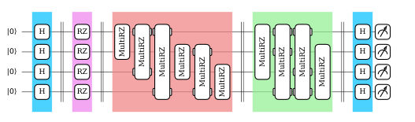
<figcaption class="paper-figure-caption"><b>Fig 1.</b> Fig. 1: Structure of an IQP circuit. The circuit begins with Hadamard gates that prepare a uniform superposition, followed by a diagonal unitary D(θ) = exp  i P j θjZgj  , where Zgj is a tensor product of Pauli-Z operators acting on the qubits indicated by the bitstring gj ∈{0, 1}n. The computation is completed by a second layer of Hadamard gates and measurement in the computational basis.</figcaption>
</figure>
<figure class="paper-figure-card">
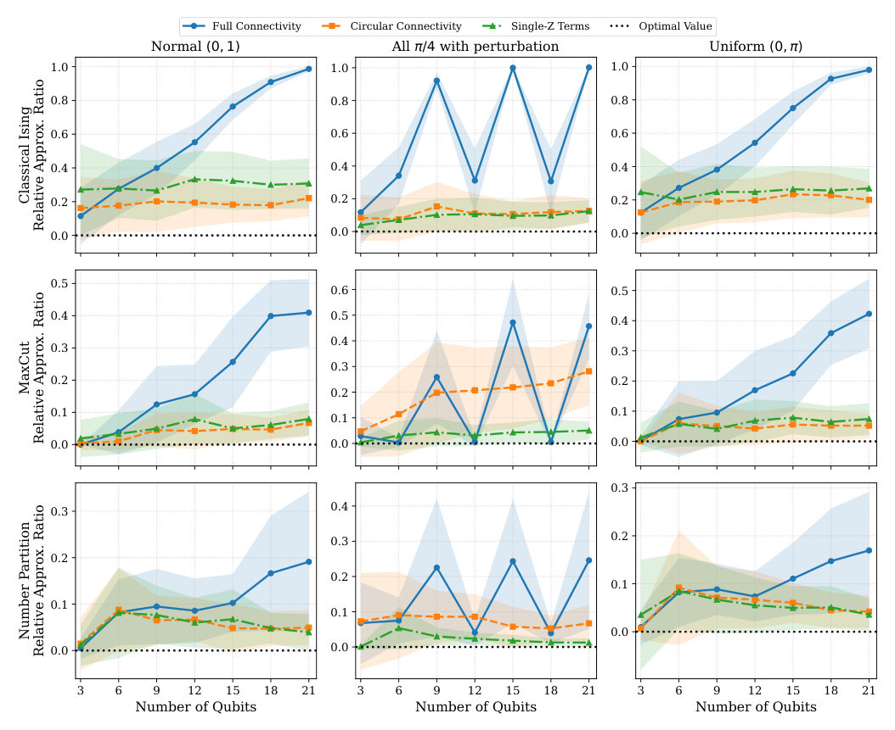
<figcaption class="paper-figure-caption"><b>Fig 2.</b> Fig. 2: Comparison of the optimization error achieved by IQP circuits for different Hamiltonians and parameter initialization strategies. The relative approximation ratio is shown as a function of the number of qubits for the classical Ising Model, MaxCut, and Number Partition Hamiltonians. Results are obtained using 1000 optimization iterations, 50 randomly generated problem instances, and 1000 Monte Carlo samples per configuration. Fully connected IQP circuits generally achieve lower relative approximation ratios than circular and single-Z architectures, while the π/4 initialization provides the oscillated performance across different problem instances.</figcaption>
</figure>
<figure class="paper-figure-card">
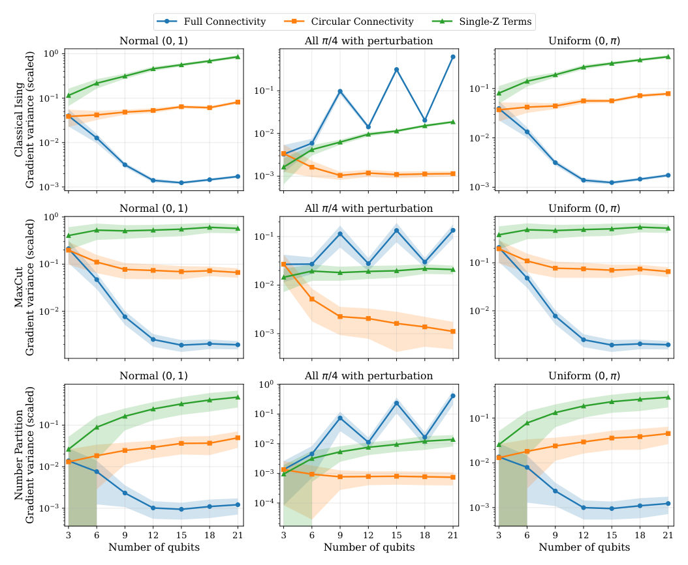
<figcaption class="paper-figure-caption"><b>Fig 3.</b> Fig. 3: Gradient variance as a function of the number of qubits with the same setup as in Fig. 2. When increasing the system size, fully connected circuits exhibit a faster decay of gradient variance than circular and single-Z architectures, indicating a stronger tendency toward barren plateaus. Conversely, sparse circuit structures maintain larger gradients and improved trainability, revealing a trade-off between circuit expressivity and optimization landscape.</figcaption>
</figure>
<figure class="paper-figure-card">
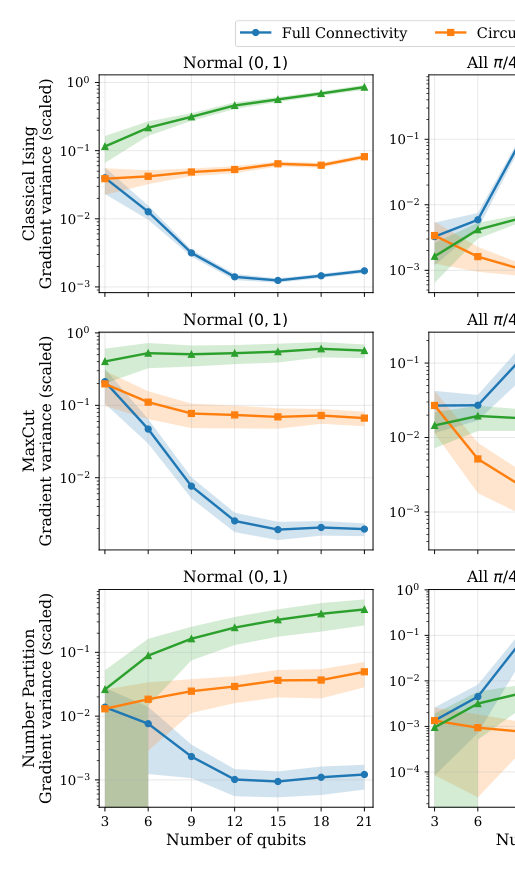
<figcaption class="paper-figure-caption"><b>Fig 4.</b> Fig. 2 compares the optimization performance of IQP cir- cuits with different connectivity structures on the three bench- mark Hamiltonians. Across all initialization strategies and problem classes, fully connected circuits generally achieve the smallest relative approximation ratios, indicating their superior ability to approximate the ground-state energy. Circular archi- tectures provide intermediate performance, whereas single-Z circuits consistently exhibit larger optimization errors. This trend becomes more pronounced for the Number Partition Hamiltonian, whose dense interaction structure requires the circuit to capture long-range correlations among qubits. The results suggest that...</figcaption>
</figure>
<figure class="paper-figure-card">
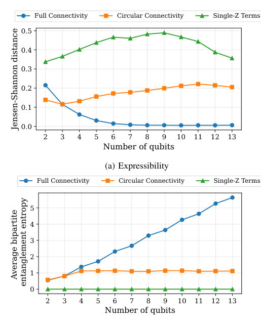
<figcaption class="paper-figure-caption"><b>Fig 5.</b> Fig. 4: Scaling behavior of IQP ans¨atzes with different con- nectivity structures. The plots compare IQP circuits with full connectivity, circular connectivity, and single-Z terms in terms of expressibility (Fig. 4a) and average bipartite entanglement entropy (Fig. 4b) as a function of the number of qubits. Both results show that increasing circuit connectivity generally enhances both state-space expressibility and entanglement generation, while single-Z term circuits remain substantially less expressive and weakly entangling.</figcaption>
</figure>
</div>

<p><strong>Summary.</strong> This paper analyzes how the connectivity structure of IQP quantum circuits affects their ability to solve complex Hamiltonian optimization problems. It establishes a crucial trade-off: highly expressive, fully connected circuits are prone to vanishing gradients (barren plateaus), while less expressive but stable circuits perform poorly. The authors conclude that an intermediate connectivity, like circular coupling, offers the most robust balance for near-term quantum computation.</p>
<p><strong>Why it may be interesting.</strong> This work directly addresses a critical bottleneck in variational quantum algorithms—the conflict between achieving high representational power (expressivity) and maintaining gradients that allow for efficient classical optimization (trainability).</p>
<details>
<summary>Detailed structure</summary>
<p><strong>Main problem.</strong> The study investigates the fundamental trade-off between optimization performance (expressivity) and training stability (trainability) when using Instantaneous Quantum Polynomial-time (IQP) circuits for solving Hamiltonian optimization problems.</p>
<p><strong>Main result.</strong> A clear trade-off exists: fully connected circuits offer high expressivity but suffer from rapid gradient decay (barren plateaus), while single-Z circuits are stable but under-expressive; circular connectivity provides the best balance.</p>
<p><strong>Method.</strong> The authors systematically compared three IQP circuit architectures (single-Z, circular, full) by minimizing expectation values of benchmark Hamiltonians and analyzing gradient variance scaling with system size.</p>
<p><strong>Model / system.</strong> The model uses IQP circuits as variational ansätze to approximate the ground state energy of various combinatorial Hamiltonians, such as Ising or MaxCut models. The analysis focuses on how circuit connectivity dictates the optimization landscape's properties.</p>
<p><strong>Key observables.</strong> Relative approximation ratio (optimization performance), gradient variance decay rate (trainability/barren plateau susceptibility), expressibility (Jensen-Shannon distance), and bipartite entanglement entropy.</p>
<p><strong>Important parameters / regimes.</strong> Circuit connectivity structure (Single-Z, Circular, Full); System size (number of qubits $n$); Optimization parameters ($   heta$).</p>
<p><strong>Assumptions / limitations.</strong> The analysis assumes that the trade-off between expressivity and trainability is a fundamental constraint for near-term quantum advantage in optimization tasks.</p>
<p><strong>Figures summary.</strong> Figures illustrate how connectivity affects expressibility (approaching Haar-random behavior) and entanglement entropy, while gradient variance plots show full connectivity decaying fastest, indicating barren plateaus.</p>
<p><strong>Paper structure.</strong> The paper systematically introduces IQP circuits for Hamiltonian optimization, analyzes performance metrics across different connectivities using benchmark Hamiltonians, and concludes by mapping out the necessary balance between expressivity and trainability required for practical quantum algorithms.</p>
</details>
<details>
<summary>Abstract</summary>
<p>Instantaneous Quantum Polynomial-time (IQP) circuits are promising candidates for near-term quantum advantage due to the conjectured classical hardness of their sampling task. However, their capabilities for optimization remain largely unexplored. We present a systematic investigation of the performance and trainability of IQP circuits for Hamiltonian optimization. Our results reveal a trade-off between optimization performance and circuit connectivity, demonstrating that the circuit structure plays a key role in determining the ability of IQP circuits to reach low-energy states.</p>
</details>
<p><sub><a href="#top">↑ back to top</a></sub></p>

<p><a id="paper-2606.24736"></a></p>
<h3 id="on-the-limits-of-stretching-quantum-pseudorandomness"><a href="http://arxiv.org/abs/2606.24736v1">On the Limits of Stretching Quantum Pseudorandomness</a></h3>
<p><strong>Authors:</strong> Boyang Chen, Andrea Coladangelo, Yao-Ting Lin, Nikos Skoumios, Justin Tysdal, Yiming Wang<br>
<strong>Type:</strong> theory · <strong>Category:</strong> quantum information and computing · <strong>PDF:</strong> <a href="https://arxiv.org/pdf/2606.24736v1">https://arxiv.org/pdf/2606.24736v1</a><br>
<strong>Analysis basis:</strong> full PDF text, analyzed in chunks
<strong>Topic relevance:</strong> <code>entanglement &amp; information structure</code> <strong>2/5</strong></p>
<div class="figure-strip-hint">↔ Scroll figures horizontally</div>
<div class="paper-figures-scroll">
<figure class="paper-figure-card">
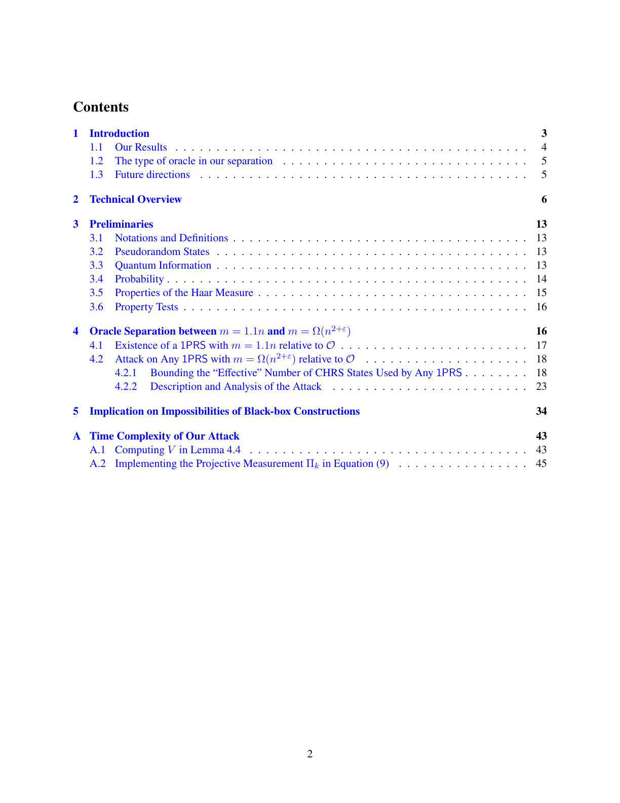
<figcaption class="paper-figure-caption"><b>Fig 1.</b> Low-resolution page preview, page 2</figcaption>
</figure>
<figure class="paper-figure-card">
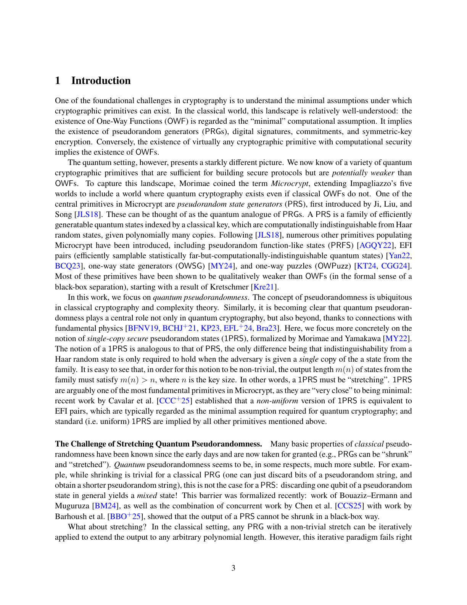
<figcaption class="paper-figure-caption"><b>Fig 2.</b> Low-resolution page preview, page 3</figcaption>
</figure>
<figure class="paper-figure-card">
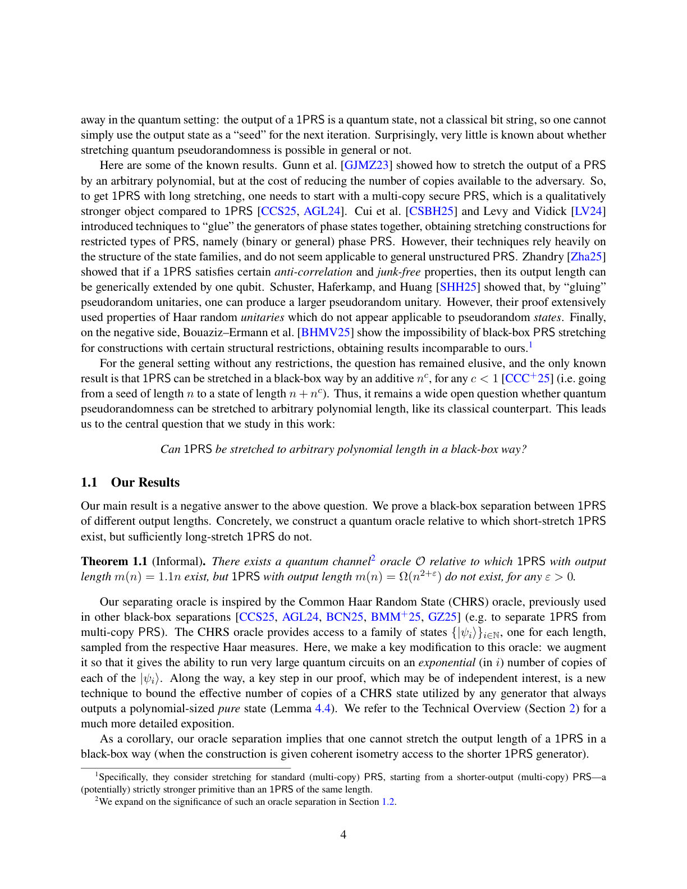
<figcaption class="paper-figure-caption"><b>Fig 3.</b> Low-resolution page preview, page 4</figcaption>
</figure>
<figure class="paper-figure-card">
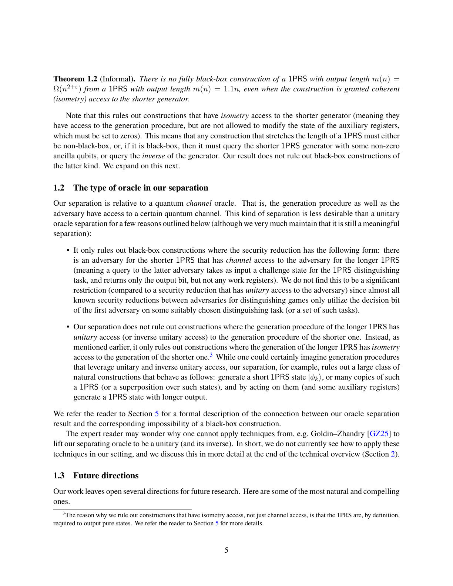
<figcaption class="paper-figure-caption"><b>Fig 4.</b> Low-resolution page preview, page 5</figcaption>
</figure>
<figure class="paper-figure-card">
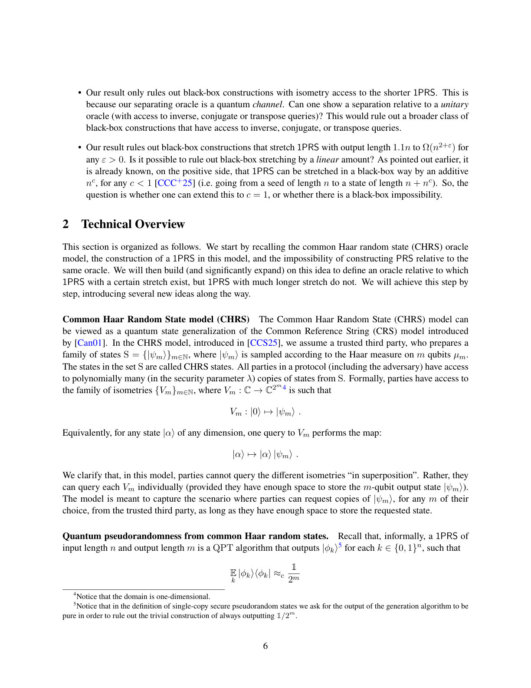
<figcaption class="paper-figure-caption"><b>Fig 5.</b> Low-resolution page preview, page 6</figcaption>
</figure>
</div>

<p><strong>Summary.</strong> This paper rigorously proves a black-box separation demonstrating that quantum pseudorandom states cannot be stretched to arbitrary polynomial lengths. By constructing an adversary oracle, the authors show that 1PRS outputs are fundamentally limited in how much their output length can increase relative to their input key size. This result places strong theoretical constraints on the efficiency and scalability of quantum randomness sources.</p>
<p><strong>Why it may be interesting.</strong> While highly abstract, this work establishes fundamental computational limits on quantum randomness generation, which underpins many theoretical models for quantum computation security.</p>
<details>
<summary>Detailed structure</summary>
<p><strong>Main problem.</strong> The core problem is determining if quantum pseudorandom states (1PRS) can be stretched to arbitrarily large polynomial output lengths in a black-box setting, analogous to classical PRGs.</p>
<p><strong>Main result.</strong> The authors prove a fundamental black-box separation showing that 1PRS cannot be stretched from a short length ($m(n)=1.1n$) to an arbitrarily long one ($\Omega(n^{2+\epsilon})$).</p>
<p><strong>Method.</strong> The proof constructs a quantum oracle and utilizes advanced techniques involving the Common Haar Random State (CHRS) model, SWAP tests, and OR testers to distinguish between 1PRS of different output lengths.</p>
<p><strong>Model / system.</strong> The work operates within the framework of quantum information theory, focusing on Single-Copy Secure Pseudorandom States (1PRS) generated relative to a Common Haar Random State (CHRS).</p>
<p><strong>Key observables.</strong> Distinguishing advantage between 1PRS outputs and Haar random states; the required output length $m(n)$.</p>
<p><strong>Important parameters / regimes.</strong> The stretch factor, comparing linear growth ($1.1n$) against super-polynomial growth ($\Omega(n^{2+\epsilon})$); the security parameter $n$.</p>
<p><strong>Assumptions / limitations.</strong> The separation is established relative to a constructed quantum oracle and holds under specific black-box access models (e.g., isometry access).</p>
<p><strong>Figures summary.</strong> Figure 1 visually categorizes different theoretical cases (Case A and Case B) based on the lengths of available CHRS states ($i$) and the number of copies ($\ell(i)$) used by the generator.</p>
<p><strong>Paper structure.</strong> The paper builds its argument through several stages: first, establishing the general black-box separation; second, analyzing specific cases (A and B) based on resource availability; and finally, combining these analyses into a unified adversary that proves the impossibility of stretching.</p>
</details>
<details>
<summary>Abstract</summary>
<p>Pseudorandom states, introduced by Ji, Liu, and Song (CRYPTO '18), are quantum analogues of classical pseudorandom generators. A fundamental property of classical pseudorandom generators is that their output can be stretched to arbitrary polynomial length. Whether an analogous stretching property holds for quantum pseudorandom states remains unclear.   In this work, we prove the first black-box separation between single-copy secure pseudorandom states ($\mathsf{1PRS}$) with different output lengths. Specifically, we construct a quantum oracle relative to which $\mathsf{1PRS}$ with output length $m(n)=1.1n$ exist, but $\mathsf{1PRS}$ with output length $m(n)=Ω(n^{2+ε})$ do not, for any $ε>0$. Our proof leverages the Common Haar Random State (CHRS) model introduced by Chen, Coladangelo, and Sattath (EUROCRYPT '25), and introduces a technique to bound the effective number of resource CHRS states utilized by any $\mathsf{1PRS}$ generator in this model.</p>
</details>
<p><sub><a href="#top">↑ back to top</a></sub></p>

<p><a id="paper-2606.24645"></a></p>
<h3 id="reachability-and-optimal-time-certificates-for-quantum-control"><a href="http://arxiv.org/abs/2606.24645v1">Reachability and optimal-time certificates for quantum control</a></h3>
<p><strong>Authors:</strong> Younes Naceur, Llorenç Balada Gaggioli<br>
<strong>Type:</strong> theory · <strong>Category:</strong> quantum information and computing · <strong>PDF:</strong> <a href="https://arxiv.org/pdf/2606.24645v1">https://arxiv.org/pdf/2606.24645v1</a><br>
<strong>Analysis basis:</strong> full PDF text, analyzed in chunks
<strong>Topic relevance:</strong> <code>analog quantum simulation</code> <strong>1/5</strong> · <code>driven-dissipative phase transition</code> <strong>1/5</strong> · <code>entanglement &amp; information structure</code> <strong>1/5</strong> · <code>methods for driven-dissipative</code> <strong>1/5</strong> · <code>non-equilibrium dynamics</code> <strong>1/5</strong></p>
<div class="figure-strip-hint">↔ Scroll figures horizontally</div>
<div class="paper-figures-scroll">
<figure class="paper-figure-card">
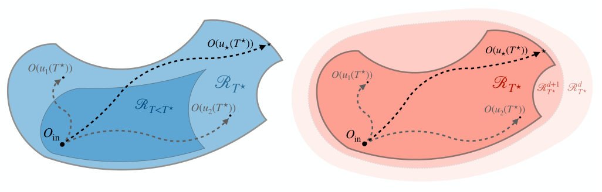
<figcaption class="paper-figure-caption"><b>Fig 1.</b> FIG. 1: Reachability certification and optimal time. (a) Geometry of constrained reachability in finite-time quantum control. Starting from the initial observable Oin, the admissible controls generate a generally nonconvex reachable set RT of terminal observables. The horizon T ⋆denotes the optimal threshold time at which the target observable O⋆first becomes reachable, i.e., O⋆= O(u⋆(T ⋆)) for some optimal admissible control u⋆(T ⋆), whereas O⋆/∈RT for earlier horizons T &lt; T ⋆. (b) The differential moment hierarchy constructs nested convex outer approximations Rd+1 T ⋆ ⊆Rd T ⋆of the true reachable set RT ⋆. If a target observable lies outside one of these outer approximations, it is...</figcaption>
</figure>
<figure class="paper-figure-card">
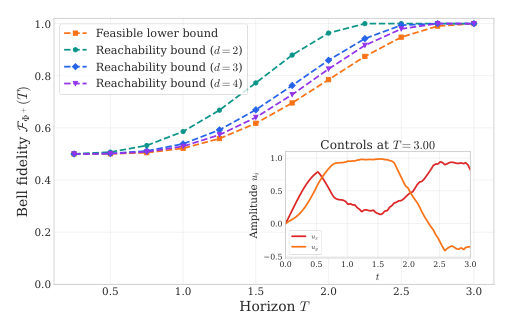
<figcaption class="paper-figure-caption"><b>Fig 2.</b> FIG. 2: Comparison of the feasible lower bound and the reachability upper bounds on the target fidelity FΦ+(T) at time T for hierarchy orders d = 2, 3, 4. Local optimizer pulses at horizon T = 3.00 are displayed in the inset.</figcaption>
</figure>
<figure class="paper-figure-card">
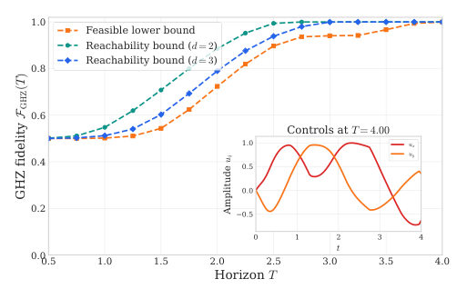
<figcaption class="paper-figure-caption"><b>Fig 3.</b> FIG. 3: Reachability bounds for the three-qubit GHZ generation, comparing feasible lower bound with the hi- erarchy upper bound at orders d = 2 and d = 3 for different control horizons T. The inset shows an illustra- tive control pulse at T = 4.00.</figcaption>
</figure>
<figure class="paper-figure-card">
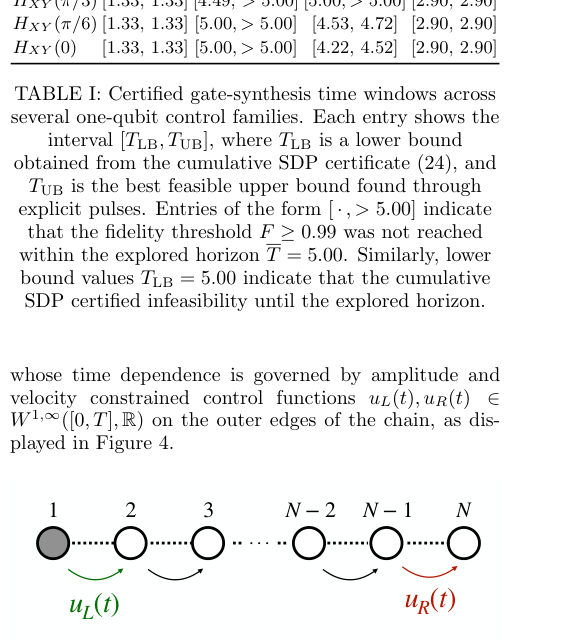
<figcaption class="paper-figure-caption"><b>Fig 4.</b> FIG. 4: Schematic of the reduced single-excitation chain used in the state-transfer benchmark. The two boundary couplings are controlled through the time-dependent amplitudes uL(t) and uR(t). The initial excitation is localized at the left end, |1⟩, and the target state is localized to the right end, |N⟩.</figcaption>
</figure>
<figure class="paper-figure-card">
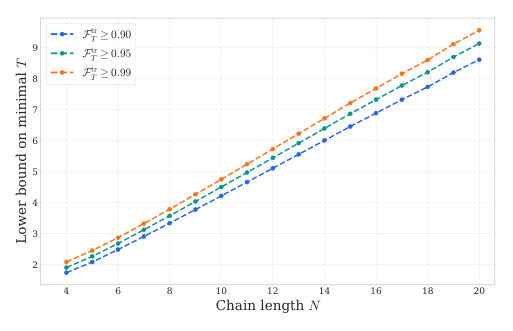
<figcaption class="paper-figure-caption"><b>Fig 5.</b> FIG. 6: Certified lower bounds on the optimal transfer time T for different target fidelities in the XX chain as a function of the chain length N = 4, . . . , 20, obtained from the reduced cumulative hierarchy (24) at relaxation order d = 2. Each line considers a different fidelity threshold.</figcaption>
</figure>
</div>

<p><strong>Summary.</strong> The paper introduces a novel framework using differential moment relaxations to rigorously certify the limitations of finite-time quantum control. It calculates upper bounds on achievable fidelities and lower bounds on minimum required times for tasks like state preparation and gate synthesis. This provides 'hardware-aware' speed limits, distinguishing true physical constraints from mere optimization shortcomings.</p>
<p><strong>Why it may be interesting.</strong> This work provides powerful, mathematically rigorous tools for quantum control that move beyond purely numerical optimization by providing certified limits on performance, which is crucial for designing fault-tolerant quantum hardware protocols.</p>
<details>
<summary>Detailed structure</summary>
<p><strong>Main problem.</strong> The core problem is developing rigorous mathematical certificates for determining the maximum achievable fidelity (reachability) and the minimum time required to reach a target state or gate in constrained quantum control.</p>
<p><strong>Main result.</strong> The authors establish differential moment hierarchies that provide computable upper bounds on terminal fidelities and corresponding lower bounds on optimal control times, thereby certifying dynamical limitations.</p>
<p><strong>Method.</strong> The framework employs moment relaxations applied to noncommutative polynomial optimization problems with implicitly time-dependent differential constraints, formulated as Semidefinite Programs (SDPs).</p>
<p><strong>Model / system.</strong> The work analyzes controlled quantum dynamics governed by Hamiltonians $H(t) = H_0 + \sum u_j(t)H_j$, applied to tasks like state preparation (Bell/GHZ states), gate synthesis ($    ext{SU}(2)$ evolution), and excitation transfer in spin chains.</p>
<p><strong>Key observables.</strong> Terminal fidelities ($F_{\Phi^+}, F_{	ext{gate}}, F_{	ext{tr}}$) are the primary observables, alongside the optimal control time $T^\star$.</p>
<p><strong>Important parameters / regimes.</strong> Control constraints ($\sum u_j^2 \le U_{\max}^2$), relaxation order ($d$), and target fidelity threshold ($\eta$).</p>
<p><strong>Assumptions / limitations.</strong> The method relies on moment relaxation techniques, which provide upper bounds; the quality of these bounds depends on the chosen relaxation order $d$.</p>
<p><strong>Figures summary.</strong> Figures illustrate the geometry of reachable sets, showing how nested convex outer approximations (from the hierarchy) bound the true set, and compare certified lower/upper bounds for state preparation fidelity vs. time.</p>
<p><strong>Paper structure.</strong> The paper develops a unified framework by first establishing the mathematical machinery (moment relaxations with differential constraints), then applying it to specific physical tasks: state preparation, gate synthesis, and state transfer, demonstrating how structural symmetries reduce computational complexity.</p>
</details>
<details>
<summary>Abstract</summary>
<p>Finite-time control is central to quantum technologies, yet rigorous limits on reachable targets and optimal control times remain largely unknown. We develop a framework for finite-time reachability and optimal-time certificates in constrained quantum control based on moment relaxations with implicitly time-dependent differential constraints. For fixed control horizons and control constraints, the method yields rigorous upper bounds on achievable terminal fidelities, lower bounds on the optimal control times required to reach them, and certificate gaps for benchmarking explicit control pulses. We demonstrate the versatility of our framework in three use cases: entangled-state preparation in two and three qubits, one-qubit gate synthesis across different control geometries, and excitation transfer in an $N$-qubit $XX$ chain. Our work establishes differential moment hierarchies as a practical tool for certifying reachability limits and optimal control times in quantum control, providing hardware-aware quantum speed limits while highlighting structure exploitation as a key ingredient for scalable certification.</p>
</details>
<p><sub><a href="#top">↑ back to top</a></sub></p>

<p><a id="paper-2606.24808"></a></p>
<h3 id="large-language-model-discovery-of-quantum-ldpc-codes-through-structured-concept-evolution"><a href="http://arxiv.org/abs/2606.24808v1">Large-Language-Model Discovery of Quantum LDPC Codes through Structured Concept Evolution</a></h3>
<p><strong>Authors:</strong> Zidu Liu, Florian Marquardt<br>
<strong>Type:</strong> theory · <strong>Category:</strong> quantum information and computing · <strong>PDF:</strong> <a href="https://arxiv.org/pdf/2606.24808v1">https://arxiv.org/pdf/2606.24808v1</a><br>
<strong>Analysis basis:</strong> full PDF text, analyzed in chunks
<strong>Topic relevance:</strong> <code>analog quantum simulation</code> <strong>1/5</strong> · <code>driven-dissipative phase transition</code> <strong>1/5</strong> · <code>entanglement &amp; information structure</code> <strong>1/5</strong> · <code>methods for driven-dissipative</code> <strong>1/5</strong></p>
<div class="figure-strip-hint">↔ Scroll figures horizontally</div>
<div class="paper-figures-scroll">
<figure class="paper-figure-card">
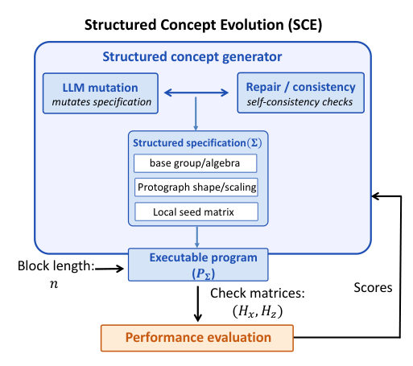
<figcaption class="paper-figure-caption"><b>Fig 1.</b> FIG. 1. The SCE framework used for qLDPC discovery. At each iteration, a parent scheme is sampled from the archive, a mutation level drawn uniformly with probability 1/3, and the LLM prompted to apply the corresponding mutation op- erator. The LLM returns a mutated scheme (structured spec- ification Σ paired with an executable program PΣ) that con- structs the corresponding CSS code at any chosen block length n. The scheme is checked for self-consistency by the repair module. The program is executed to emit the parity-check matrices (HX, HZ), which are evaluated and assigned a fitness score S. Each evaluated scheme, together with its score, is stored in the quality-diversity archive. At the...</figcaption>
</figure>
<figure class="paper-figure-card">
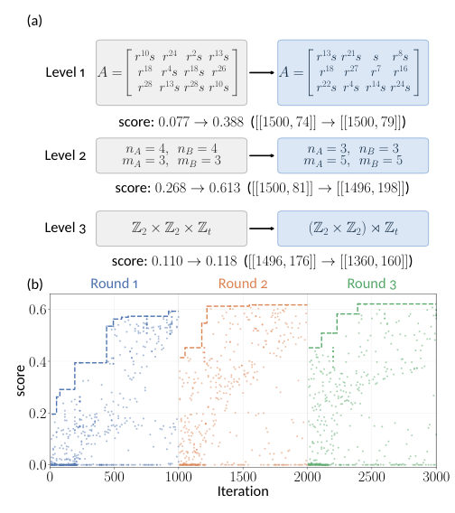
<figcaption class="paper-figure-caption"><b>Fig 2.</b> FIG. 2. Hierarchical mutation and score evolution. (a) The three mutation levels, each shown as a representative par- ent →child step drawn from the search log, with the result- ing change in score and code parameters [[n, k]]. Level 1: the group and protograph shape are fixed and only the local F2[G] entries of the base matrices A and B are rewritten. Here we present the base matrix A. We consider the code based on Dicm, where r is the rotation generator (the order-2m cyclic element) and s is an order-4 element satisfying s2 = rm and srs−1 = r−1. Level 2: the group family is fixed as Dicm and the protograph shape changes, A, B : 3 × 4 →5 × 3. At n ≈1500, the family parameter m shrinks 15...</figcaption>
</figure>
<figure class="paper-figure-card">
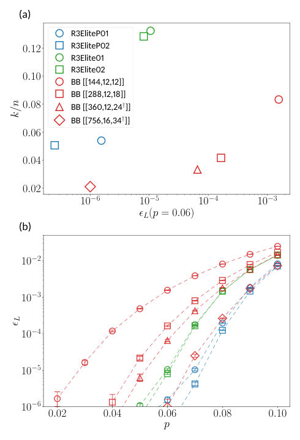
<figcaption class="paper-figure-caption"><b>Fig 3.</b> FIG. 3. Performance of evolved LP codes against BB base- lines under code-capacity depolarizing noise. The logical error rate is reported per logical qubit, ϵL = 1−(1−pL)1/k. (a) En- coding rate k/n versus ϵL at fixed physical error rate p = 0.06 for the top two LP elites of each set (blue: CpL, green: Cscore) and four BB codes (red). † denotes an upper bound on the distance. Points toward the upper-left are preferable (high rate, low logical error). The Cscore set attains the highest rate k/n ≈0.13 among all codes shown. (b) ϵL versus p for the top two LP codes of each set and the four BB codes. Markers match panel (a). Error bars are 95% Clopper–Pearson confi- dence intervals [60].</figcaption>
</figure>
</div>

<p><strong>Summary.</strong> This paper presents Structured Concept Evolution (SCE), an LLM-guided evolutionary framework designed to overcome the difficulty of constructing good quantum LDPC codes. By allowing the LLM to mutate high-level algebraic concepts rather than raw matrices, the method discovers diverse and competitive code families over both abelian and non-abelian groups. The results demonstrate a powerful AI tool for advancing the theoretical design of fault-tolerant quantum computation.</p>
<p><strong>Why it may be interesting.</strong> While focused on quantum error correction codes rather than AMO dynamics, the underlying principle of using advanced AI (LLMs) to navigate complex, high-dimensional combinatorial search spaces for physical constraints is highly relevant to designing optimal quantum control or simulation protocols in AMO physics.</p>
<details>
<summary>Detailed structure</summary>
<p><strong>Main problem.</strong> The primary challenge is discovering high-performing quantum low-density parity-check (qLDPC) codes because the search space for their construction is vast and discrete.</p>
<p><strong>Main result.</strong> The authors successfully used an LLM-guided evolutionary framework to discover diverse, competitive families of qLDPC codes spanning both abelian and non-abelian group structures.</p>
<p><strong>Method.</strong> They introduced Structured Concept Evolution (SCE), which pairs a Large Language Model with a structured algebraic mutation grammar to evolve code concepts at three hierarchical levels: local entries, protograph shape, and base group algebra.</p>
<p><strong>Model / system.</strong> The focus is on constructing CSS quantum LDPC codes using the lifted-product construction based on finite groups G. These codes are evaluated for error correction capability against depolarizing noise.</p>
<p><strong>Key observables.</strong> Logical error rate ($\epsilon_L$) vs. physical error rate ($p$), encoding rate ($k/n$), and fitness scores derived from decoding performance (BP+OSD).</p>
<p><strong>Important parameters / regimes.</strong> Physical error rates $p \in \{0.05, 0.06, 0.07\}$; code parameters $[[n, k, d]]$; stabilizer weight threshold $\le 14$.</p>
<p><strong>Assumptions / limitations.</strong> The search relies on LLMs (GPT-5.4 variants) acting as intelligent mutation operators constrained by a structured algebraic grammar.</p>
<p><strong>Figures summary.</strong> Figures illustrate the SCE framework flow, showing parent-to-child mutations across three levels (L1, L2, L3), and plot the block-length dependence of logical failure rates for various discovered code families.</p>
<p><strong>Paper structure.</strong> The paper introduces the problem, details the SCE methodology involving structured concepts and hierarchical mutation grammar, presents results showing diverse code discovery spanning abelian to non-abelian groups, and concludes with performance comparisons across different noise models.</p>
</details>
<details>
<summary>Abstract</summary>
<p>Quantum computers could outperform classical machines on important problems, but only if the errors that pervade quantum hardware can be corrected at scale. Quantum low-density parity-check (qLDPC) codes offer a promising route to this goal by combining sparse parity checks with finite encoding rate and growing distance, but their construction remains a challenging discrete design problem. Here we introduce structured concept evolution (SCE), a search framework that pairs a large language model with a structured algebraic mutation grammar to discover lifted-product code families, a class of CSS qLDPC codes. Instead of asking the LLM to design codes from first principles, SCE evolves structured concepts consisting of algebraic specifications paired with executable programs that realize them, using hierarchical mutations that modify the group algebra, protograph geometry, or base space. Running SCE, we discover a diverse set of competitive code families, ranging from abelian constructions to families over non-abelian groups beyond those underlying standard designs such as bivariate-bicycle codes, and characterize them under code-capacity depolarizing noise with BP+OSD decoding. These results are obtained with lightweight models (GPT-5.4-mini and GPT-5.4-nano).</p>
</details>
<p><sub><a href="#top">↑ back to top</a></sub></p>

<p><a id="paper-2606.23934"></a></p>
<h3 id="augmenting-imaginary-time-evolution-with-local-geometric-information"><a href="http://arxiv.org/abs/2606.23934v1">Augmenting Imaginary-Time Evolution with Local Geometric Information</a></h3>
<p><strong>Authors:</strong> Carlos L. Benavides-Riveros, Prachi Sharma, Fedor Šimkovic<br>
<strong>Type:</strong> theory · <strong>Category:</strong> strongly correlated electrons · <strong>PDF:</strong> <a href="https://arxiv.org/pdf/2606.23934v1">https://arxiv.org/pdf/2606.23934v1</a><br>
<strong>Analysis basis:</strong> full PDF text, analyzed in chunks
<strong>Topic relevance:</strong> <code>analog quantum simulation</code> <strong>1/5</strong> · <code>methods for driven-dissipative</code> <strong>1/5</strong> · <code>non-equilibrium dynamics</code> <strong>1/5</strong></p>
<div class="figure-strip-hint">↔ Scroll figures horizontally</div>
<div class="paper-figures-scroll">
<figure class="paper-figure-card">
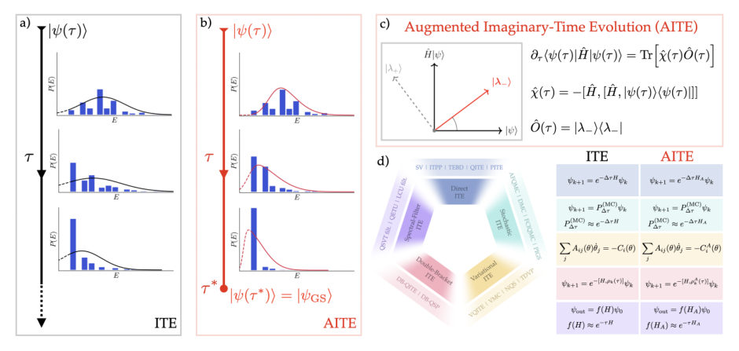
<figcaption class="paper-figure-caption"><b>Fig 1.</b> FIG. 1. Schematic comparison of standard imaginary-time evolution (ITE) and augmented imaginary-time evolution (AITE). a) In standard ITE, the energy distribution P(E) of the evolving state |ψ(τ)⟩shifts monotonically toward lower energies as τ increases, converging to the ground state asymptotically as τ →∞. The convergence rate is governed solely by the energy variance. b) In AITE, the skewness of the instantaneous energy distribution is exploited to identify geometry-informed descent directions, yielding the ground state |ψGS⟩at finite imaginary time τ ∗. c) The key equations of AITE: the rate of energy decrease is given by Tr[ˆχ(τ) ˆO(τ)], where ˆχ(τ) is the double-bracket operator. The...</figcaption>
</figure>
<figure class="paper-figure-card">
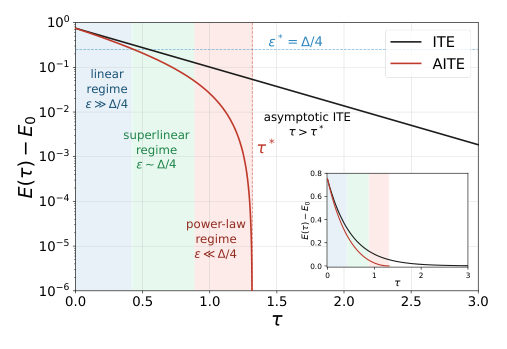
<figcaption class="paper-figure-caption"><b>Fig 2.</b> FIG. 2. Energy error E(τ) −EGS as a function of imaginary time τ for ITE (black) and AITE (red) as predicted in Eq. (12) (with ∆= 1 and ε0 = 0.75). The main panel shows the error evolution on a logarithmic scale, with shaded regions identi- fying four dynamical regimes: the linear regime (ε ≫∆/4, blue), the superlinear regime (ε ∼∆/4, green), the power-law extinction regime (ε ≪∆/4, red), and the asymptotic ITE regime. The dashed vertical line marks the finite extinction time τ ∗of AITE. The inset displays the same dynamics on a linear scale, highlighting the finite-time extinction of AITE in contrast to the asymptotic exponential decay of ITE.</figcaption>
</figure>
<figure class="paper-figure-card">
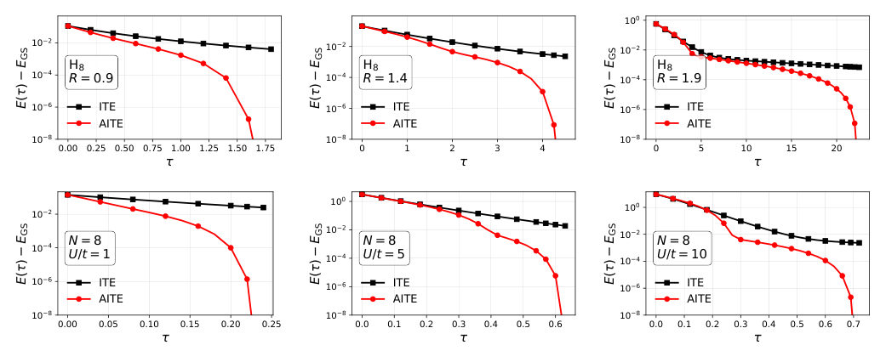
<figcaption class="paper-figure-caption"><b>Fig 3.</b> FIG. 3. Energy error E(τ) −EGS as a function of imaginary time τ for equidistant H8 (upper panels) and the one-dimensional Fermi-Hubbard model at half filling with N = 8 sites and open boundary conditions (lower panels). Within each row, the interatomic spacing R (H8) and interaction strength U/t (Hubbard) increase from left to right. Results are shown for ITE and AITE. In all cases, the initial trial state corresponds to the Hartree–Fock state.</figcaption>
</figure>
<figure class="paper-figure-card">
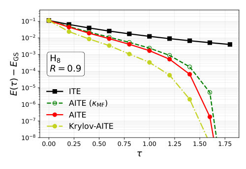
<figcaption class="paper-figure-caption"><b>Fig 4.</b> FIG. 4. Energy error E(τ) −EGS as a function of imaginary time τ for standard ITE (black), AITE (red), AITE using the mean-field skewness approximation κMF (green), and the Krylov-subspace energy estimator for AITE (yellow), applied to the hydrogen chain H8.</figcaption>
</figure>
</div>

<p><strong>Summary.</strong> The paper introduces Augmented Imaginary-Time Evolution (AITE) to accelerate the notoriously slow convergence of standard imaginary-time evolution algorithms. By incorporating local geometric information derived from energy distribution statistics, AITE achieves superlinear convergence leading to finite-time error extinction. This provides a significant algorithmic improvement for simulating ground states in quantum many-body systems.</p>
<p><strong>Why it may be interesting.</strong> This work provides a powerful algorithmic acceleration technique for finding ground states in strongly correlated systems, directly impacting computational methods used in condensed matter physics simulations.</p>
<details>
<summary>Detailed structure</summary>
<p><strong>Main problem.</strong> Standard imaginary-time evolution (ITE) for ground-state preparation converges only asymptotically, leading to slow convergence rates.</p>
<p><strong>Main result.</strong> The proposed Augmented Imaginary-Time Evolution (AITE) framework achieves superlinear convergence and exhibits finite-time extinction of the energy error, significantly outperforming standard ITE.</p>
<p><strong>Method.</strong> AITE augments the standard gradient flow by incorporating local geometric information derived from higher-order statistical moments (like skewness) of the instantaneous energy distribution into the descent direction.</p>
<p><strong>Model / system.</strong> The methods are applied to general quantum many-body systems, with specific numerical tests performed on the H8 chain and the Fermi-Hubbard model. The evolution is governed by imaginary time ($   au$) under a Hamiltonian $\hat{H}$.</p>
<p><strong>Key observables.</strong> Energy error $E(	au) - E_{	ext{GS}}$, energy variance ($\mu_2$), and skewness coefficient ($\kappa$).</p>
<p><strong>Important parameters / regimes.</strong> The spectral gap ($\Delta = E_1 - E_{GS}$), the imaginary time $    au$, and the target precision $\epsilon^*$.</p>
<p><strong>Assumptions / limitations.</strong> Practical implementation restricts the search for optimal descent operators to the second-order Krylov subspace, and mean-field approximations are used for higher moments.</p>
<p><strong>Figures summary.</strong> Figures compare energy error vs. time ($   au$) curves, showing AITE's power-law extinction against ITE's asymptotic exponential decay across various models (H8 chain, Fermi-Hubbard).</p>
<p><strong>Paper structure.</strong> The paper introduces the problem with standard ITE, develops the AITE framework by generalizing the flow using geometric information ($\hat{O}(	au)$), analyzes the convergence rate improvement leading to finite-time extinction, and discusses practical approximations like mean-field moment estimation.</p>
</details>
<details>
<summary>Abstract</summary>
<p>Imaginary-time evolution (ITE) underpins a broad family of algorithms for ground-state preparation in quantum simulation and quantum many-body physics. In these methods, convergence is governed by the energy variance of the instantaneous state, causing the flow to approach the ground state only asymptotically. We introduce an augmented imaginary-time evolution (AITE) framework that replaces the standard gradient flow on the energy landscape with a geometrically informed descent along locally optimal directions, which are identified by exploiting the higher-order statistical structure of the instantaneous energy distribution. The resulting flow strictly outperforms standard ITE throughout the entire evolution and exhibits two qualitatively distinct regimes: a superlinear convergence regime, followed by an extinction regime in which the energy error vanishes exactly at a finite imaginary time, in sharp contrast to the asymptotic exponential decay of ITE. Standard ITE is recovered in the zero-skewness limit of AITE, implying that the acceleration extends naturally across the broader ITE algorithmic family.</p>
</details>
<p><sub><a href="#top">↑ back to top</a></sub></p>

<p><a id="paper-2606.24431"></a></p>
<h3 id="free-space-cv-qkd-with-single-mode-fiber-reception-effective-coupling-statistics-and-protocol-dependent-reference-noise"><a href="http://arxiv.org/abs/2606.24431v1">Free-Space CV-QKD with Single-Mode Fiber Reception: Effective Coupling Statistics and Protocol-Dependent Reference Noise</a></h3>
<p><strong>Authors:</strong> Hesham S. Ibrahim, Arnaud Coatanhay<br>
<strong>Type:</strong> theory · <strong>Category:</strong> quantum information and computing · <strong>PDF:</strong> <a href="https://arxiv.org/pdf/2606.24431v1">https://arxiv.org/pdf/2606.24431v1</a><br>
<strong>Analysis basis:</strong> full PDF text, analyzed in chunks
<strong>Topic relevance:</strong> <code>interference shaping light</code> <strong>1/5</strong> · <code>quantum measurements</code> <strong>1/5</strong> · <code>quantum optics experiment</code> <strong>1/5</strong></p>
<div class="figure-strip-hint">↔ Scroll figures horizontally</div>
<div class="paper-figures-scroll">
<figure class="paper-figure-card">
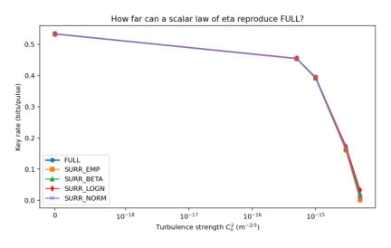
<figcaption class="paper-figure-caption"><b>Fig 1.</b> FIG. 1. Comparison between the full optical model, a mean- loss-only approximation, and several scalar surrogates for the effective SMF coupling law in the GG02 setting. Mean loss alone systematically overestimates the secret key rate, whereas realistic scalar coupling laws reproduce the full model with good accuracy over a broad turbulence range.</figcaption>
</figure>
<figure class="paper-figure-card">
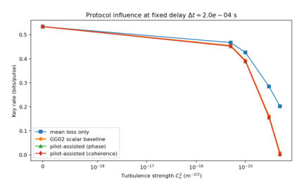
<figcaption class="paper-figure-caption"><b>Fig 2.</b> FIG. 2. Comparison between the scalar GG02 baseline and pilot-assisted effective models at fixed signal-pilot de- lay. The pilot-assisted curves lie below the scalar baseline, with a degradation that becomes increasingly significant in the stronger turbulence regime.</figcaption>
</figure>
<figure class="paper-figure-card">
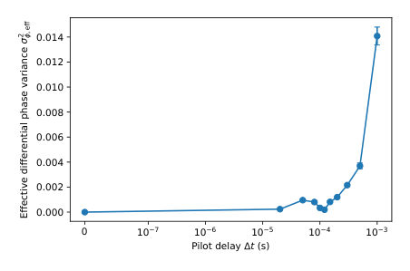
<figcaption class="paper-figure-caption"><b>Fig 3.</b> FIG. 3. Delay scan at C2 n = 3.0 × 10−15 m−2/3. The effective differential phase variance σ2 ϕ,eff is estimated from five inde- pendent seeds, with 300 turbulent realizations per delay and per seed. The frozen-flow shift is implemented by a Fourier sub-pixel translation of the phase screens.</figcaption>
</figure>
<figure class="paper-figure-card">
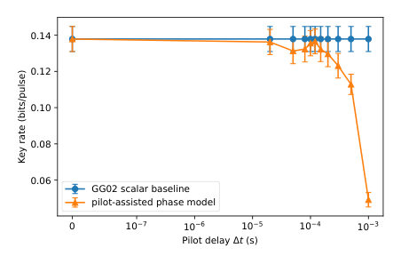
<figcaption class="paper-figure-caption"><b>Fig 4.</b> FIG. 4. Delay dependence of the effective key rate. The scalar GG02 baseline remains essentially independent of the signal- pilot delay, whereas the pilot-assisted phase model degrades once the differential phase variance becomes non-negligible. Error bars show the standard error over five independent seeds.</figcaption>
</figure>
<figure class="paper-figure-card">
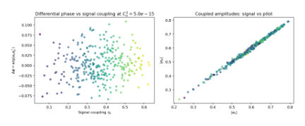
<figcaption class="paper-figure-caption"><b>Fig 5.</b> FIG. 6. Supplementary pilot-assisted diagnostic showing the signal–pilot mismatch at the level of coupled amplitudes and relative phase. This figure supports the interpretation of the pilot-assisted degradation as a consequence of differential signal–pilot decoherence rather than of scalar signal fading alone.</figcaption>
</figure>
</div>

<p><strong>Summary.</strong> The paper rigorously analyzes the effective channel impairments in free-space CV-QKD when light passes through atmospheric turbulence and is coupled into an SMF. It demonstrates that while the standard protocol (GG02) can be accurately modeled using a scalar coupling law, protocols utilizing a reference signal require tracking differential phase mismatches, which introduces a distinct, measurable noise penalty.</p>
<p><strong>Why it may be interesting.</strong> This work is highly relevant as it bridges complex wave optics simulations with information-theoretic security bounds, providing concrete physical constraints (the need for differential observables) that must be accounted for in practical quantum communication system design.</p>
<details>
<summary>Detailed structure</summary>
<p><strong>Main problem.</strong> The core problem is determining the physically relevant effective channel variable for Continuous-Variable Quantum Key Distribution (CV-QKD) when atmospheric turbulence and Single-Mode Fiber (SMF) reception are involved.</p>
<p><strong>Main result.</strong> For standard GG02, a realistic scalar law for SMF coupling efficiency suffices; however, pilot-assisted protocols require an additional protocol-dependent reference observable due to signal-pilot phase mismatch.</p>
<p><strong>Method.</strong> The authors employ full wave-optics simulations (split-step propagation) followed by deriving effective Gaussian channel closures based on analyzing the necessary statistical moments of the optical observables.</p>
<p><strong>Model / system.</strong> The system is a free-space CV-QKD link propagating through atmospheric turbulence, which is modeled via random phase screens and subsequent finite-aperture collection onto an SMF guided mode. The analysis compares simple mean-loss approximations against more rigorous moment closures.</p>
<p><strong>Key observables.</strong> Effective coupling efficiency ($\eta_{smf}$), relative phase ($\Delta\phi$), complex coherence indicator ($
u$), and the resulting key rate (bits/pulse).</p>
<p><strong>Important parameters / regimes.</strong> Atmospheric turbulence strength ($C_2^n$), propagation distance ($L=1000$ m), and signal-pilot time delay ($\Delta t$).</p>
<p><strong>Assumptions / limitations.</strong> The analysis relies on developing effective physical models (closures) for the channel statistics, rather than providing a complete composable security proof. The mean-loss model is used as a deliberately simple control case.</p>
<p><strong>Figures summary.</strong> Figures compare full optical model results against simplified approximations (mean loss vs. scalar surrogates) for GG02, and show that pilot-assisted key rates degrade significantly with increasing signal-pilot delay ($\Delta t$) due to differential phase variance.</p>
<p><strong>Paper structure.</strong> The paper progresses by first modeling the full wave optics, then establishing effective closures for the standard GG02 setting using scalar surrogates. It extends this analysis to pilot-assisted architectures, where it introduces and quantifies an additional protocol-dependent reference noise penalty based on differential observables.</p>
</details>
<details>
<summary>Abstract</summary>
<p>We study free-space continuous-variable quantum key distribution (CV-QKD) with single-mode fiber (SMF) reception under atmospheric turbulence. The optical channel is modeled by split-step propagation through random phase screens, followed by finite-aperture collection and projection onto the guided receiving mode. We first examine the standard GG02 setting and ask which receiver-side observable is sufficient for effective key-rate prediction. We show that a mean-loss description is generally too optimistic, whereas a scalar effective law for the SMF coupling efficiency provides an accurate downstream Gaussian-channel description within the effective model considered here. We then extend the optical model to a pilot-assisted architecture in which the signal and pilot propagate through correlated but non-identical turbulent realizations generated by a frozen-flow construction. In this case, the signal coupling law alone is no longer sufficient: signal--pilot phase mismatch and loss of post-coupling coherence produce an additional protocol-dependent reference-noise penalty. The results distinguish two regimes: a scalar coupling description is largely adequate for GG02, while transmitted-reference architectures require an additional differential reference observable beyond the signal coupling statistics.</p>
</details>
<p><sub><a href="#top">↑ back to top</a></sub></p>

<p><a id="paper-2606.24659"></a></p>
<h3 id="preparing-multi-qudit-states-in-a-definite-weight-subspace"><a href="http://arxiv.org/abs/2606.24659v1">Preparing multi-qudit states in a definite-weight subspace</a></h3>
<p><strong>Authors:</strong> Nabi Zare Harofteh, Rafael I. Nepomechie<br>
<strong>Type:</strong> theory · <strong>Category:</strong> quantum information and computing · <strong>PDF:</strong> <a href="https://arxiv.org/pdf/2606.24659v1">https://arxiv.org/pdf/2606.24659v1</a><br>
<strong>Analysis basis:</strong> full PDF text, analyzed in chunks
<strong>Topic relevance:</strong> <code>correlated cavity matter</code> <strong>1/5</strong> · <code>entanglement &amp; information structure</code> <strong>1/5</strong> · <code>exotic spin models in light-matter</code> <strong>1/5</strong></p>
<div class="figure-strip-hint">↔ Scroll figures horizontally</div>
<div class="paper-figures-scroll">
<figure class="paper-figure-card">
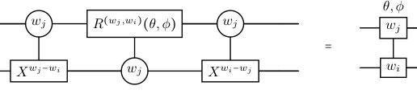
<figcaption class="paper-figure-caption"><b>Fig 1.</b> Figure 1: Circuit diagram for the Gray gate Gwi,wj i,j (θ,ϕ) (3.7). In its symbolic form shown on the right, it is understood that the w-values in the lower and upper boxes correspond to qudits i and j, respectively, as i &gt; j.</figcaption>
</figure>
<figure class="paper-figure-card">
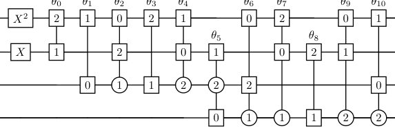
<figcaption class="paper-figure-caption"><b>Fig 2.</b> Figure 2: The quantum circuit (3.17) for preparing a state with ⃗k = (2,1,1), see (2.6) and Table 1. The Gray gates are defined in Fig. 1, and the circles denote controls.</figcaption>
</figure>
<figure class="paper-figure-card">
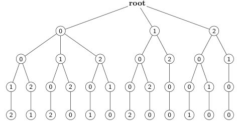
<figcaption class="paper-figure-caption"><b>Fig 3.</b> Figure 3: Tree for lexicographic ordering of multiset permutations for ⃗k = (2,1,1), which does not have the Gray property.</figcaption>
</figure>
<figure class="paper-figure-card">
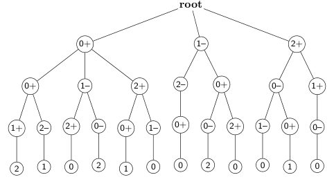
<figcaption class="paper-figure-caption"><b>Fig 4.</b> Figure 4: Tree for multiset permutations with the Gray property for ⃗k = (2,1,1). Note that the signs of the nodes alternate across each level. (Adapted from Fig. 3 in [36].)</figcaption>
</figure>
<figure class="paper-figure-card">
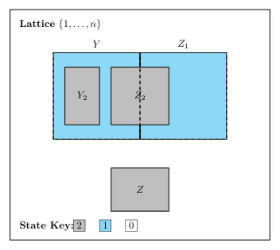
<figcaption class="paper-figure-caption"><b>Fig 5.</b> Figure 5: Venn diagram representing subsets of {1,...,n} entering into the derivation of (B.14). The shadings indicate the states (0, 1 or 2) corresponding to these subsets. Not shown: X2 = Y2 ∪Z ∪Z2 and X = Y ∪Z1 ∪Z.</figcaption>
</figure>
</div>

<p><strong>Summary.</strong> The paper develops a deterministic quantum algorithm based on Gray codes to prepare complex multi-qudit quantum states within specific weight subspaces. By decomposing the state preparation into sequential controlled rotations, it successfully applies this method to generate exact eigenstates of Hamiltonians relevant to strongly correlated physics, such as Bethe and Dicke states.</p>
<p><strong>Why it may be interesting.</strong> This work provides a concrete quantum computational blueprint—a universal gate sequence—for preparing highly entangled, symmetry-protected many-body eigenstates (like Bethe or Dicke states) that are central to understanding quantum magnetism and interacting systems.</p>
<details>
<summary>Detailed structure</summary>
<p><strong>Main problem.</strong> The primary goal is to formulate a deterministic quantum algorithm for preparing arbitrary multi-qudit states within a specific definite-weight subspace.</p>
<p><strong>Main result.</strong> A concrete, gate-based procedure using Gray codes and controlled rotations (Gray gates) is established to prepare these complex entangled states, including Bethe and Dicke states.</p>
<p><strong>Method.</strong> The method maps the state preparation problem onto traversing an ordered sequence of basis states defined by a multiset permutation Gray code. Each transition requires applying a specific controlled unitary rotation (the 'Gray gate').</p>
<p><strong>Model / system.</strong> The system involves $n$-qudit systems using $d$-dimensional qudits, whose states are characterized by weight vectors $\vec{k}$. The target states are eigenstates of various Hamiltonians, such as the SU(3)-invariant Heisenberg Hamiltonian.</p>
<p><strong>Key observables.</strong> State amplitudes ($a_w$) defining the superposition coefficients, and the eigenvalues of the relevant symmetry-preserving Hamiltonians (e.g., $E = -rac{1}{2}n(n-1)$ for Dicke states).</p>
<p><strong>Important parameters / regimes.</strong> The weight vector $\vec{k}=(k_0, \dots, k_{d-1})$, the qudit dimension $d$, and the deformation parameter $q$ (for $    ext{SU}_q(d)$ generalizations).</p>
<p><strong>Assumptions / limitations.</strong> The algorithm assumes that a Gray code ordering exists for the multiset permutations such that adjacent states differ by exactly one controlled swap, allowing the state preparation to be decomposed into sequential two-qudit rotations.</p>
<p><strong>Figures summary.</strong> Figures illustrate the structure of the required Gray gate circuit (Figure 1) and optimized tree structures ensuring the single-swap property for multiset permutations (Figure 4).</p>
<p><strong>Paper structure.</strong> The paper first introduces the general framework using Gray codes to reduce state preparation to controlled rotations. It then applies this method specifically to prepare eigenstates of the SU(3)-invariant Heisenberg Hamiltonian (Bethe states) and generalizes it to $    ext{SU}(d)$ Dicke states, detailing both the circuit structure and the underlying algebraic formulas for amplitudes.</p>
</details>
<details>
<summary>Abstract</summary>
<p>We formulate a deterministic algorithm for preparing arbitrary multi-qudit states in a definite-weight subspace. By ordering the corresponding computational basis states according to a Gray code for multiset permutations, the state-preparation task is reduced to performing a sequence of controlled 2-qudit Gray rotations. We use this algorithm to prepare exact eigenstates of the SU(3)-invariant Heisenberg Hamiltonian, whose Bethe ansatz is nested. In particular, we describe the preparation of the Bethe states, which are SU(3) highest-weight states, as well as their lower-weight descendants. We also consider the preparation of $SU(d)$ Dicke states and their q-deformations.</p>
</details>
<p><sub><a href="#top">↑ back to top</a></sub></p>

<p><a id="paper-2606.24507"></a></p>
<h3 id="uncovering-latent-structures-in-robust-pulse-sequences-a-model-based-reinforcement-learning-approach-for-adaptable-quantum-control"><a href="http://arxiv.org/abs/2606.24507v1">Uncovering Latent Structures in Robust Pulse Sequences: A Model-Based Reinforcement Learning Approach for Adaptable Quantum Control</a></h3>
<p><strong>Authors:</strong> Tobias Kiermeyer, Thomas Heydenreich, Léo Van Damme, Sebastian Hohenemser, Florian Marquardt, Steffen J. Glaser<br>
<strong>Type:</strong> theory · <strong>Category:</strong> other · <strong>PDF:</strong> <a href="https://arxiv.org/pdf/2606.24507v1">https://arxiv.org/pdf/2606.24507v1</a><br>
<strong>Analysis basis:</strong> full PDF text, analyzed in chunks
<strong>Topic relevance:</strong> <code>QC/QI experiment</code> <strong>1/5</strong> · <code>methods for driven-dissipative</code> <strong>1/5</strong> · <code>quantum measurements</code> <strong>1/5</strong></p>
<div class="figure-strip-hint">↔ Scroll figures horizontally</div>
<div class="paper-figures-scroll">
<figure class="paper-figure-card">
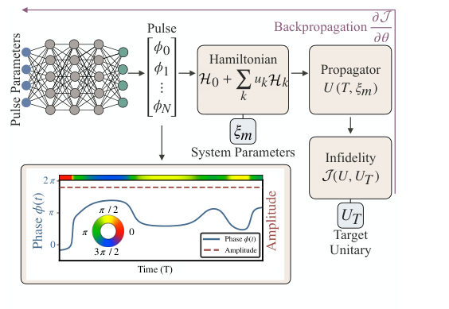
<figcaption class="paper-figure-caption"><b>Fig 1.</b> FIG. 1. Schematic of model-based RL for quantum control. The network generates a control pulse, which is then applied to the system Hamiltonian to compute the resulting propa- gator. The infidelity with respect to the target unitary is evaluated and backpropagated through the entire computa- tional graph using automatic differentiation (AD) to update the network parameters.</figcaption>
</figure>
<figure class="paper-figure-card">
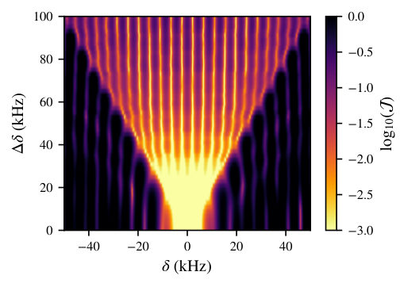
<figcaption class="paper-figure-caption"><b>Fig 2.</b> FIG. 2. Robustness profile of pulses with TP = 450 µs, β = 3π/2 and ∆s = 0 optimized for different offset ranges ∆δ.</figcaption>
</figure>
<figure class="paper-figure-card">
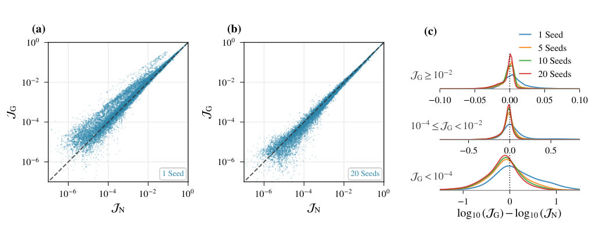
<figcaption class="paper-figure-caption"><b>Fig 3.</b> FIG. 3. Comparison of neural network and GRAPE infidelities across 100,000 gate configurations {Gi}. (a, b) Infidelity of GRAPE (JG) versus the neural network (JN) for 1 and 20 GRAPE seeds, respectively; each point represents one gate configuration within {Gi} and the dashed line indicates equal performance. The network outperforms single-seed GRAPE in a substantial fraction of cases; with 20 seeds the balance shifts in favor of GRAPE, though most configurations remain near the diagonal. (c) Distribution of log10 JG −log10 JN grouped by infidelity regime (rows) and GRAPE seed count (colors). Negative values indicate GRAPE outperforms the network. The distributions broaden and shift toward...</figcaption>
</figure>
<figure class="paper-figure-card">
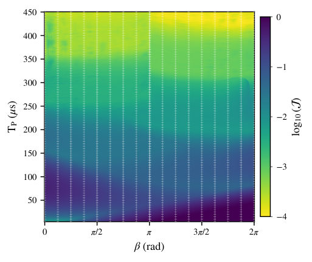
<figcaption class="paper-figure-caption"><b>Fig 4.</b> FIG. 4. Infidelity landscape of pulses generated by the neural network, evaluated across a dense grid of pulse durations TP and rotation angles β for ∆δ = 20 kHz and ∆s = 0. White crosses indicate training points included in the training pa- rameter space.</figcaption>
</figure>
<figure class="paper-figure-card">
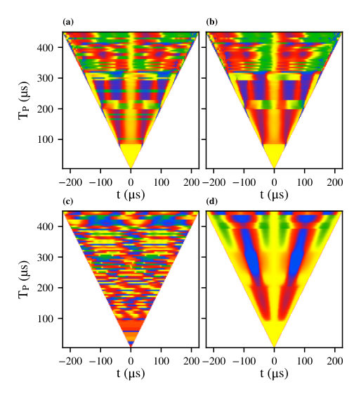
<figcaption class="paper-figure-caption"><b>Fig 5.</b> FIG. 5. Phase profiles of GRAPE-optimized pulses before (left column) and after (right column) phase curation, for rotation angles β = 3π/2 (top row) and β = 2π (bottom row). The curation procedure reveals continuous phase structures while leaving the gate fidelity unchanged.</figcaption>
</figure>
</div>

<p><strong>Summary.</strong> The paper introduces a novel model-based Reinforcement Learning framework to solve the challenge of generating quantum control pulses that remain high-fidelity despite variations in experimental parameters. By training a single neural network on an entire family of gate configurations, it achieves rapid, adaptable pulse generation superior to traditional methods like GRAPE for exploring parameter space robustness. This significantly accelerates the design cycle for complex quantum operations.</p>
<p><strong>Why it may be interesting.</strong> This work provides a powerful machine learning tool for quantum control, moving beyond computationally expensive, point-wise optimization methods. The ability to encode system physics directly into the loss function makes it highly relevant for designing robust protocols in experimental AMO platforms like superconducting qubits or trapped ions.</p>
<details>
<summary>Detailed structure</summary>
<p><strong>Main problem.</strong> The core challenge is achieving real-time, adaptive quantum control by generating robust, high-fidelity control pulses across a continuous range of varying experimental parameters.</p>
<p><strong>Main result.</strong> A model-based Reinforcement Learning approach using a single neural network can generate highly accurate and adaptable control pulses that maintain fidelity comparable to multiple independent optimization runs (GRAPE).</p>
<p><strong>Method.</strong> The authors train a neural network to map input gate configurations directly to optimized pulse phase profiles, bypassing the need for iterative optimization for every parameter set.</p>
<p><strong>Model / system.</strong> The system is modeled as a single-spin (two-level) quantum system driven by an external field, described by a time-dependent Hamiltonian that includes tunable parameters like detuning and inhomogeneity.</p>
<p><strong>Key observables.</strong> Fidelity ($\mathcal{J}$) and ensemble-averaged infidelity ($ar{\mathcal{J}}$), which quantify how well the generated pulse achieves the target gate operation across parameter variations.</p>
<p><strong>Important parameters / regimes.</strong> Gate configuration parameters include rotation angle ($eta$), pulse duration ($T_P$), detuning range width ($\Delta\delta$), and amplitude inhomogeneity range width ($\Delta s$).</p>
<p><strong>Assumptions / limitations.</strong> The primary assumption is that the underlying physical model (Hamiltonian) can be embedded into a differentiable computational graph for training. GRAPE's memoryless nature is contrasted with the network's ability to generalize.</p>
<p><strong>Figures summary.</strong> Figures compare pulse phase profiles and robustness fingerprints ($\log_{10} J(\delta)$) generated by the NN versus standard GRAPE, demonstrating structural consistency across varying parameters and durations.</p>
<p><strong>Paper structure.</strong> The paper introduces the problem of adaptive control limitations in traditional methods (GRAPE), proposes the model-based RL framework using a single network to learn the entire parameter manifold, details the training process involving ensemble averaging, and validates performance by comparing generalization capabilities against multi-seed GRAPE runs.</p>
</details>
<details>
<summary>Abstract</summary>
<p>Real-time adaptive control of quantum systems requires rapid generation of robust, high-fidelity pulses across a continuous range of operating conditions. Standard optimization algorithms such as gradient-ascent pulse engineering (GRAPE) solve each instance independently, discarding information between runs and requiring costly reinitialization when parameters change. We present an approach to robust optimal quantum control based on model-based reinforcement learning, in which a single neural network -- embedding the Hamiltonian directly into the training pipeline -- generates robust gates across an entire family of gate configurations, without pre-computed training data. Demonstrated on a single-spin (two-level) system, the trained networks produce pulses for arbitrary rotation angles over a range of pulse durations, detunings, and field inhomogeneities in milliseconds, at fidelities comparable to multi-seed GRAPE. The framework is inherently adaptable: any parameter entering the Hamiltonian can serve as a network input, extending the approach to different systems and control settings. Beyond speed, the network reveals structure in the control landscape: it discovers the same structured phase profiles that appear in GRAPE solutions -- made identifiable through fidelity-invariant symmetry transformations -- but more consistently than independent optimization. This consistency enables smooth interpolation across the entire trained parameter space.</p>
</details>
<p><sub><a href="#top">↑ back to top</a></sub></p>

<p><a id="paper-2606.24125"></a></p>
<h3 id="density-wave-order-enhances-the-phonon-thermal-hall-effect-in-a-trilayer-nickelate"><a href="http://arxiv.org/abs/2606.24125v1">Density-wave order enhances the phonon thermal Hall effect in a trilayer nickelate</a></h3>
<p><strong>Authors:</strong> Qiaochao Xiang, Enkang Zhang, Xiaokang Li, Xiaodong Guo, Mengfei Zhu, Jun Zhao, Guang-Ming Zhang, Liang Li, Zengwei Zhu<br>
<strong>Type:</strong> experiment · <strong>Category:</strong> strongly correlated electrons · <strong>PDF:</strong> <a href="https://arxiv.org/pdf/2606.24125v1">https://arxiv.org/pdf/2606.24125v1</a><br>
<strong>Analysis basis:</strong> full PDF text, analyzed in chunks
<strong>Topic relevance:</strong> <code>exotic spin models in light-matter</code> <strong>1/5</strong> · <code>spintronics-quantum-optics interface</code> <strong>1/5</strong></p>
<div class="figure-strip-hint">↔ Scroll figures horizontally</div>
<div class="paper-figures-scroll">
<figure class="paper-figure-card">
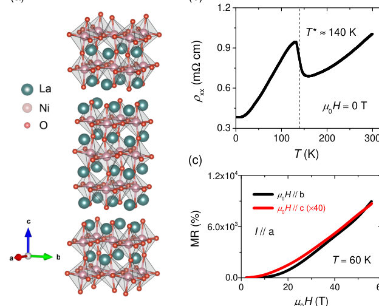
<figcaption class="paper-figure-caption"><b>Fig 1.</b> FIG. 1. Crystal structure and longitudinal transport properties of La4Ni3O10 at ambient pressure. (a) Crystal structure of La4Ni3O10 in the monoclinic P21/a phase. La, Ni, and O atoms are indicated. (b) Temperature dependence of the longitudinal resistivity ρxx at zero field. It exhibits a clear anomaly near T ∗≈140 K, marking the density-wave transition. (c) Magnetoresistance (MR) measured under pulsed magnetic fields up to 55 T, where MR(%) = [ρ(B) −ρ(0)]/ρ(0) × 100%. The MR for µ0H ∥b is much larger than that for µ0H ∥c. (d) Temperature dependence of the longitudinal thermal conductivity κxx at 0 T and 10 T for µ0H ∥c, together with the electronic contribution L0σxxT. The nearly...</figcaption>
</figure>
<figure class="paper-figure-card">
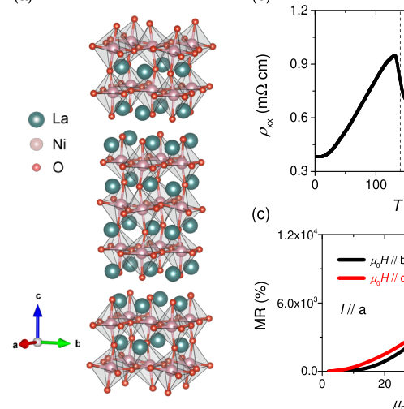
<figcaption class="paper-figure-caption"><b>Fig 2.</b> Fig. 1(a) shows the ambient-pressure crystal structure of La4Ni3O10 in the monoclinic P21/a phase, consist- ing of trilayer NiO2 planes separated by LaO rock-salt layers[8]. Fig. 1(b) presents the zero-field longitudinal resistivity ρxx(T). A pronounced inflection appears near the density-wave transition temperature T ∗≈140 K. Below T ∗, ρxx(T) exhibits a clear upturn, indicative of a partial gap opening[61, 62], before recovering metallic be- havior at lower temperatures. Fig. 1(c) displays the mag- netoresistance measured up to 55 T at 60 K for magnetic</figcaption>
</figure>
<figure class="paper-figure-card">
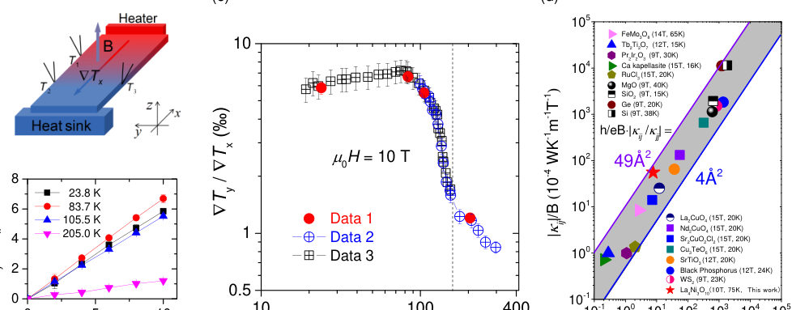
<figcaption class="paper-figure-caption"><b>Fig 3.</b> FIG. 2. Thermal Hall responses and its enhancement by density-wave order. (a) Schematic of the setup for simultaneous longitudinal and transverse thermal conductivity measurements. (b) Thermal Hall angle ∇Ty/∇Tx vs magnetic field at selected temperatures, showing nearly linear dependence. (c) Temperature dependence of ∇Ty/∇Tx at µ0H = 10 T. The thermal Hall angle increases sharply below T ∗≈140 K and peaks around 70 K. Data from three different measurement methods (see Supplementary Materials [30]) show good agreement. (d) Comparison of the field-normalized transverse thermal conductivity, |κij|/B, with the longitudinal thermal conductivity κii in La4Ni3O10 and representative phonon thermal...</figcaption>
</figure>
<figure class="paper-figure-card">
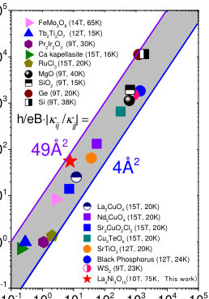
<figcaption class="paper-figure-caption"><b>Fig 4.</b> Fig. 3(b) shows the temperature dependence of the field-normalized thermal Hall resistivity, W⊥/B = κxy/(κ2 xxB) = (∇yT/Jx q )/B, in La4Ni3O10 and in other solids[31]. The transition-induced enhancement is more clearly resolved by the observation of two distinct ther- mal Hall resistivity plateaus in La4Ni3O10. This behav- ior suggests that both below and above T ∗, a transverse</figcaption>
</figure>
<figure class="paper-figure-card">
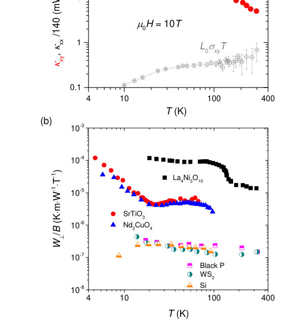
<figcaption class="paper-figure-caption"><b>Fig 5.</b> FIG. 3. Phonon thermal Hall conductivity and two thermal Hall resistivity plateaus. (a) Temperature de- pendence of κxy. The measured κxy exceeds by far the elec- tronic contribution (grey data), ruling out charge-carrier ori- gin. Its peak coincides with that of κxx (black data), a univer- sal feature of the phonon thermal Hall effect. Together with linear field dependence and negligible field-dependent ther- mal conductivity (magnons contribute little), this establishes a phononic origin. (b) Temperature dependence of the field- normalized thermal Hall resistivity, W⊥/B = (∇yT/Jx q )/B, in La4Ni3O10 and comparison with other solids[31]. The value of La4Ni3O10 pronounced change below T ∗,...</figcaption>
</figure>
</div>

<p><strong>Summary.</strong> The authors report observing a large, enhanced phonon thermal Hall effect in the nickelate $   ext{La}<em 10>4   ext{Ni}_3   ext{O}</em>$ below its density-wave transition temperature. By measuring multiple transport properties and ruling out electronic or simple phonon-drag contributions, they attribute the signal to magnon-phonon hybridization driven by spin-lattice coupling. This reveals a crucial interplay between magnetic order and lattice dynamics in these superconducting materials.</p>
<p><strong>Why it may be interesting.</strong> This work provides experimental evidence for how electronic order (density waves) can couple strongly to lattice vibrations (phonons), leading to exotic thermal responses. This coupling mechanism is relevant to understanding emergent quantum phenomena in correlated materials.</p>
<details>
<summary>Detailed structure</summary>
<p><strong>Main problem.</strong> The study investigates the role of lattice degrees of freedom in the normal state of Ruddlesden–Popper nickelates, specifically focusing on the origin and enhancement mechanism of the phonon thermal Hall effect.</p>
<p><strong>Main result.</strong> The enhanced transverse thermal conductivity ($\kappa_{xy}$) below the density-wave transition is strongly attributed to phonons coupled via magnon-phonon hybridization driven by spin-lattice coupling. This signal significantly exceeds contributions from electronic carriers or simple phonon drag mechanisms.</p>
<p><strong>Method.</strong> The research employs transport measurements, measuring longitudinal and transverse thermal conductivities ($\kappa_{xx}, \kappa_{xy}$), magnetoresistance, and Seebeck/Nernst coefficients as a function of temperature and magnetic field.</p>
<p><strong>Model / system.</strong> The physical system is the trilayer nickelate $ ext{La}<em 10>4   ext{Ni}_3   ext{O}</em>$, which exhibits density-wave order. The underlying physics involves charge-lattice coupling, where hybridization between apical oxygen $2p$ and Ni $3d_{z^2}$ orbitals creates local dipoles that interact with magnetic fields.</p>
<p><strong>Key observables.</strong> Thermal Hall angle ($
abla T_y / 
abla T_x$), transverse thermal conductivity ($\kappa_{xy}$), longitudinal thermal conductivity ($\kappa_{xx}$), Seebeck coefficient ($S$), and Nernst coefficient ($\alpha_{xy}$).</p>
<p><strong>Important parameters / regimes.</strong> Density-wave transition temperature ($T^* \approx 140$ K); characteristic energy scales ($\sim 3.2 - 4.1$ meV); magnetic field strength (up to 10 T).</p>
<p><strong>Assumptions / limitations.</strong> The analysis assumes that the electronic contribution can be estimated via the Wiedemann–Franz law, and it estimates an upper bound for phonon-drag using $S_{xx}T\alpha_{xy}$.</p>
<p><strong>Figures summary.</strong> Figures show $\kappa_{xy}$ enhancement below $T^*$, confirming phononic origin over electronic contributions. They also compare measured $\kappa_{xy}$ against the calculated phonon-drag limit, showing a large discrepancy.</p>
<p><strong>Paper structure.</strong> The paper systematically measures various transport coefficients ($
ho, \kappa, S, \alpha$) under varying magnetic fields and temperatures to isolate the source of transverse heat transport, culminating in a comparison that rules out simple models like phonon drag.</p>
</details>
<details>
<summary>Abstract</summary>
<p>Ruddlesden--Popper nickelates have emerged as a promising platform for high-temperature superconductivity, yet the role of lattice degrees of freedom in their correlated normal state remains largely unexplored. Here, we report the observation of a finite phonon thermal Hall effect in the trilayer nickelate La$_4$Ni$_3$O$_{10}$ at ambient pressure. Remarkably, the thermal Hall response is strongly enhanced below the density-wave transition at $T^*\approx140$ K, exhibiting two distinct plateaus in the thermal Hall resistivity. The characteristic energy scale extracted from the thermal Hall response ($\sim4.1$ meV) closely matches the magnon--phonon crossing span energy ($\sim3.2$ meV), pointing to magnon--phonon hybridization as the primary mechanism enhancing the thermal Hall effect. These results provide new insight into the interplay between lattice and spin excitations in nickelates, with implications for understanding both their superconductivity and the multiple possible origins of insulating thermal Hall signals.</p>
</details>
<p><sub><a href="#top">↑ back to top</a></sub></p>

<p><a id="paper-2606.24522"></a></p>
<h3 id="no-deleting-principle-for-two-unitary-copies"><a href="http://arxiv.org/abs/2606.24522v1">No-deleting principle for two unitary copies</a></h3>
<p><strong>Authors:</strong> Dafa Li<br>
<strong>Type:</strong> theory · <strong>Category:</strong> quantum information and computing · <strong>PDF:</strong> <a href="https://arxiv.org/pdf/2606.24522v1">https://arxiv.org/pdf/2606.24522v1</a><br>
<strong>Analysis basis:</strong> full PDF text, analyzed in chunks
<strong>Topic relevance:</strong> <code>entanglement &amp; information structure</code> <strong>1/5</strong> · <code>quantum measurements</code> <strong>1/5</strong></p>
<div class="figure-strip-hint">↔ Scroll figures horizontally</div>
<div class="paper-figures-scroll">
<figure class="paper-figure-card">
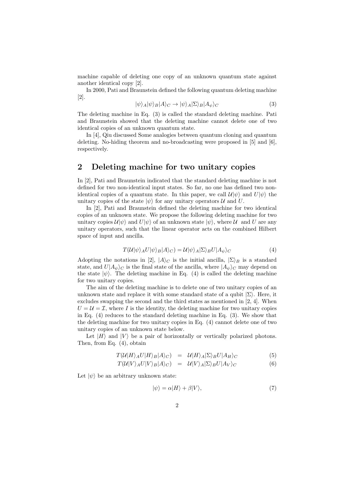
<figcaption class="paper-figure-caption"><b>Fig 1.</b> Low-resolution page preview, page 2</figcaption>
</figure>
<figure class="paper-figure-card">
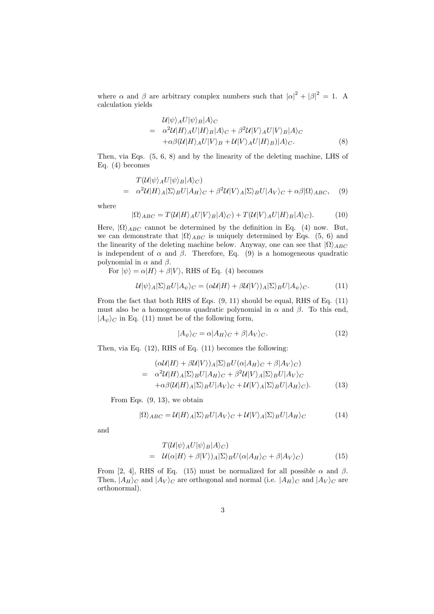
<figcaption class="paper-figure-caption"><b>Fig 2.</b> Low-resolution page preview, page 3</figcaption>
</figure>
<figure class="paper-figure-card">
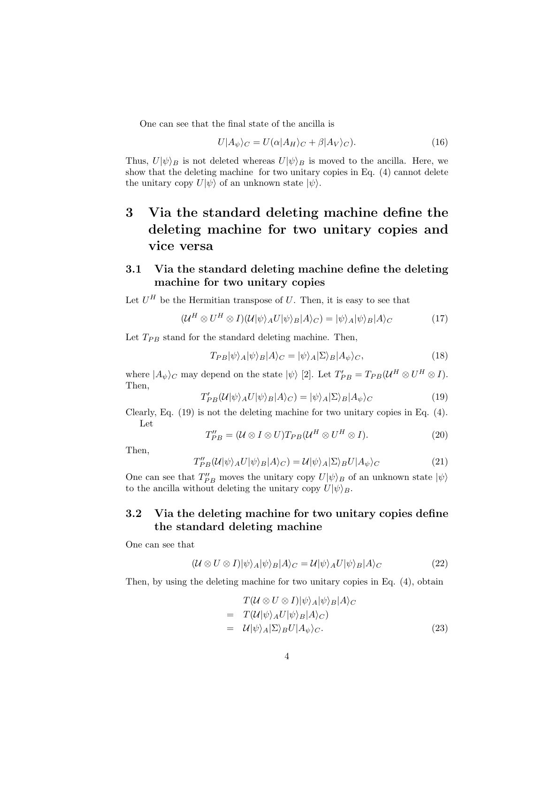
<figcaption class="paper-figure-caption"><b>Fig 3.</b> Low-resolution page preview, page 4</figcaption>
</figure>
<figure class="paper-figure-card">
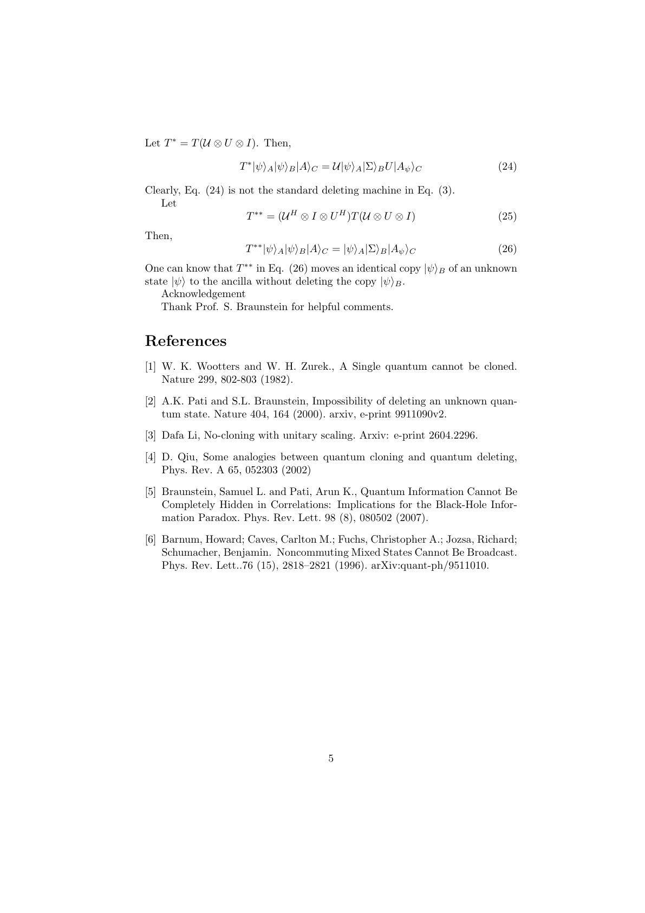
<figcaption class="paper-figure-caption"><b>Fig 4.</b> Low-resolution page preview, page 5</figcaption>
</figure>
</div>

<p><strong>Summary.</strong> This paper tackles a generalization of the no-cloning theorem by examining the deletion of one copy from two non-identical unitary copies of an unknown quantum state. The authors define these copies using arbitrary unitaries $U$ and $V$ acting on $|\psi
angle$. Through rigorous mathematical analysis, they prove that such a universal deletion operation is impossible.</p>
<p><strong>Why it may be interesting.</strong> This work extends fundamental no-cloning theorems into the realm of distinguishing between different types of quantum state redundancy (unitary vs. identical copies), which has implications for quantum error correction protocols and information processing limits.</p>
<details>
<summary>Detailed structure</summary>
<p><strong>Main problem.</strong> The paper investigates the fundamental impossibility of deleting one copy when presented with two non-identical, unknown quantum states.</p>
<p><strong>Main result.</strong> It is shown that a proposed 'deleting machine' for two unitary copies of an unknown state cannot successfully delete one of them.</p>
<p><strong>Method.</strong> The authors analyze the action of a defined linear operator (the deleting machine) on arbitrary input states and derive mathematical contradictions based on the assumption that deletion is possible.</p>
<p><strong>Model / system.</strong> The system models two 'unitary copies' of an unknown state $|\psi
angle$, represented by $U|\psi
angle$ and $V|\psi
angle$, where $U$ and $V$ are arbitrary unitary operators. The process is formalized using a linear operator acting on the joint Hilbert space.</p>
<p><strong>Key observables.</strong> The success or failure of the deletion operation, analyzed through the structure of the resulting state in an ancilla register.</p>
<p><strong>Important parameters / regimes.</strong> The unitaries $U$ and $V$, and the unknown quantum state $|\psi
angle$.</p>
<p><strong>Assumptions / limitations.</strong> The core assumption tested is the equality between the input description (LHS) and the required output structure (RHS) of the proposed deleting machine.</p>
<p><strong>Paper structure.</strong> The paper builds upon prior work on identical copies, defines the non-identical unitary copies ($U|\psi
angle$ and $V|\psi
angle$), proposes a specific deletion operator, and then rigorously proves its impossibility through algebraic manipulation.</p>
</details>
<details>
<summary>Abstract</summary>
<p>Pati and Braunstein defined a deleting machine and showed the impossibility of deleting one of two identical copies of an unknown quantum state. So far, no one has defined two non-identical copies of a quantum state, of course no one has discussed the impossibility of deleting one of two non-identical copies of an unknown quantum state. In this paper, we define $u|ψ>$ and $U|ψ>$, where $u$ and $U$ are any unitary operators, as two unitary copies of a quantum state $|ψ>$, and show that it is impossible to delete one of two unitary copies of an unknown state.</p>
</details>
<p><sub><a href="#top">↑ back to top</a></sub></p>

<p><a id="paper-2606.24676"></a></p>
<h3 id="nonlinear-refractive-index-of-warm-rubidium-vapor"><a href="http://arxiv.org/abs/2606.24676v1">Nonlinear refractive index of warm rubidium vapor</a></h3>
<p><strong>Authors:</strong> L. Kardum, G. Premec, N. Šantić, D. Aumiler<br>
<strong>Type:</strong> both · <strong>Category:</strong> other · <strong>PDF:</strong> <a href="https://arxiv.org/pdf/2606.24676v1">https://arxiv.org/pdf/2606.24676v1</a><br>
<strong>Analysis basis:</strong> full PDF text, analyzed in chunks
<strong>Topic relevance:</strong> <code>interference shaping light</code> <strong>1/5</strong> · <code>quantum optics experiment</code> <strong>1/5</strong></p>
<div class="figure-strip-hint">↔ Scroll figures horizontally</div>
<div class="paper-figures-scroll">
<figure class="paper-figure-card">
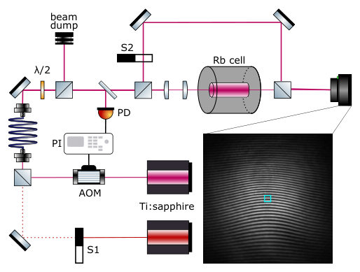
<figcaption class="paper-figure-caption"><b>Fig 1.</b> FIG. 1: Scheme of the experimental setup for the interfero- metric measurement of the refractive index of Rb vapor. The resulting interferogram is shown in the bottom right with the small square indicating the region used for calculating the phase.</figcaption>
</figure>
<figure class="paper-figure-card">
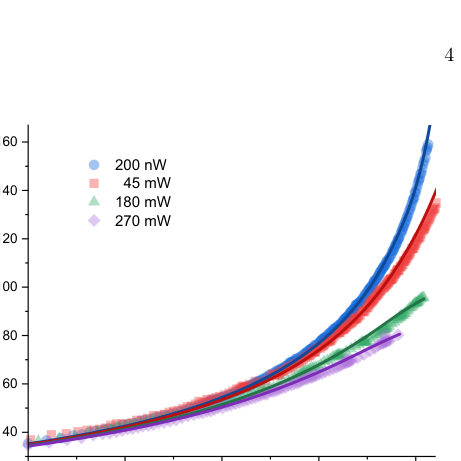
<figcaption class="paper-figure-caption"><b>Fig 2.</b> FIG. 2: Phase as a function of detuning from the 87Rb 5S1/2, F = 2 →5P3/2, F ′ = 2 transition. Measured results (data points) and theoretical simulations (lines) are shown for different laser power. T = 119°C, N = 1.54 × 1013 cm−3.</figcaption>
</figure>
<figure class="paper-figure-card">
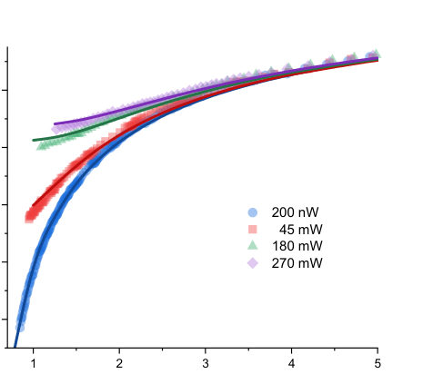
<figcaption class="paper-figure-caption"><b>Fig 3.</b> FIG. 3: Phase as a function of detuning from the 87Rb 5S1/2, F = 1 →5P3/2, F ′ = 2 transition. Measured results (data points) and theoretical simulations (lines) are shown for different laser power. Cell temperature T and atom concen- tration N are the same as in Fig. 2.</figcaption>
</figure>
<figure class="paper-figure-card">
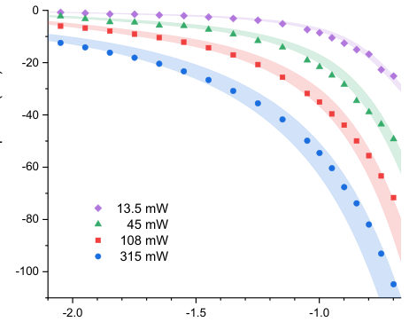
<figcaption class="paper-figure-caption"><b>Fig 4.</b> FIG. 4: Nonlinear phase as a function of detuning from the 87Rb 5S1/2, F = 2 →5P3/2, F ′ = 2 transition. Measured re- sults (data points) and theoretical simulations (shaded areas) are shown for different laser power, where the shaded areas represent the uncertainty of the calculated nonlinear phase resulting from the uncertainty of the concentration of 87Rb atoms.</figcaption>
</figure>
<figure class="paper-figure-card">

<figcaption class="paper-figure-caption"><b>Fig 5.</b> FIG. 5: Nonlinear phase as a function of laser power. Measured results (data points) and theoretical simulations (shaded areas) are shown for different laser detunings from the 87Rb 5S1/2, F = 2 →5P3/2, F ′ = 2 transition, where the shaded areas represent the uncertainty of the calculated nonlinear phase resulting from the uncertainty of the concen- tration of 87Rb atoms.</figcaption>
</figure>
</div>

<p><strong>Summary.</strong> This paper presents a comprehensive study determining the nonlinear refractive index of warm rubidium vapor by combining advanced theoretical modeling with precise interferometric measurements. The authors successfully modeled the complex atomic response using density matrix equations, achieving quantitative agreement with experimental data. This work is significant for quantum optics as it provides reliable parameters ($n_2$ and $I_s$) for designing optical devices utilizing alkali vapors.</p>
<p><strong>Why it may be interesting.</strong> This work provides a highly practical, quantitative tool for characterizing light-matter interaction in warm atomic media, which is crucial for developing quantum sensors and optical components based on alkali vapors.</p>
<details>
<summary>Detailed structure</summary>
<p><strong>Main problem.</strong> To theoretically calculate and experimentally measure the nonlinear refractive index of warm rubidium vapor.</p>
<p><strong>Main result.</strong> The study achieved excellent quantitative agreement between theory and experiment, determining a Kerr nonlinear refractive index ($n_2$) up to $10^{-4} 	ext{ cm}^2/	ext{W}$. The results confirm that the nonlinearity is saturable.</p>
<p><strong>Method.</strong> Theoretical calculations utilize the optical Bloch equations solved via density matrix formalism, which are then compared against measurements taken using a Mach-Zehnder interferometer setup.</p>
<p><strong>Model / system.</strong> The system involves warm alkali vapors (specifically Rb) modeled by considering 6-level atoms interacting with a probe laser. The model incorporates complex broadening effects like Doppler, transit time, and pressure broadening.</p>
<p><strong>Key observables.</strong> Nonlinear phase shift ($\delta\phi$), the nonlinear refractive index ($n_{NL}$), saturation intensity ($I_s$), and the Kerr coefficient ($n_2$).</p>
<p><strong>Important parameters / regimes.</strong> Detuning from atomic resonance, laser power/intensity, and temperature (which dictates atom concentration).</p>
<p><strong>Assumptions / limitations.</strong> The model uses the rotating wave approximation and includes various collision broadening mechanisms while neglecting certain population transfer effects.</p>
<p><strong>Figures summary.</strong> Figures compare simulated hyperfine absorption spectra to experimental data across varying temperatures; they also plot nonlinear phase versus detuning and versus laser power, demonstrating saturation behavior.</p>
<p><strong>Paper structure.</strong> The paper progresses from establishing the theoretical framework using density matrix equations (optical Bloch equations) to applying this theory to simulate linear and nonlinear refractive indices. This is validated by comparing these simulations against detailed measurements obtained via interferometry.</p>
</details>
<details>
<summary>Abstract</summary>
<p>The potential to precisely control both the linear and nonlinear index of refraction through optical manipulation of the atomic states has recently pushed warm alkali vapors to the forefront of research in the field of quantum sensors, quantum memories, and quantum fluids of light. Rubidium (Rb) vapor in centimeter-scale glass cells or millimeter-scale MEMS cells has proven to be a very promising platform for these applications, yet only a handful of research works have been dedicated to the investigation of the (non)linear refractive index of Rb vapor. We present results of theoretical calculations of the (non)linear refractive index of warm Rb vapor, based on the optical Bloch equations for 6-level Rb atoms interacting with a probe laser. They are compared to the experimental results obtained using an interferometric technique, showing excellent quantitative agreement. A Kerr nonlinear refractive index $n_2$ of up to $10^{-4}$ cm$^2$/W is obtained. Python scripts for all theoretical calculations presented in this work are provided, including the refractive index calculation, that can readily be used in practical implementations for simulating the (non)linear refractive index of Rb vapor including the effects of Doppler broadening, transit time broadening, pressure broadening, saturation, optical pumping, and spin-exchange collisions.</p>
</details>
<p><sub><a href="#top">↑ back to top</a></sub></p>

<p><a id="paper-2606.23785"></a></p>
<h3 id="controlled-chaos-in-4d-scfts"><a href="http://arxiv.org/abs/2606.23785v1">Controlled Chaos in 4D SCFTs</a></h3>
<p><strong>Authors:</strong> Florent Baume, Atakan Çavuşoğlu, Vivek Chakrabhavi, Jonathan J. Heckman<br>
<strong>Type:</strong> theory · <strong>Category:</strong> statistical mechanics · <strong>PDF:</strong> <a href="https://arxiv.org/pdf/2606.23785v1">https://arxiv.org/pdf/2606.23785v1</a><br>
<strong>Analysis basis:</strong> full PDF text, analyzed in chunks
<strong>Topic relevance:</strong> <code>entanglement &amp; information structure</code> <strong>1/5</strong></p>
<div class="figure-strip-hint">↔ Scroll figures horizontally</div>
<div class="paper-figures-scroll">
<figure class="paper-figure-card">

<figcaption class="paper-figure-caption"><b>Fig 1.</b> Figure 1: Distributions of the level spacing ratios ˜r for the integrable case and Gaussian beta ensembles. The solid lines are the approximate formulas given by equations (2.5) and (2.9), and the histograms are the numerical distributions, which were obtained by diagonalizing the random tridiagonal matrix given in equation (2.10), for L = 1000 with 104 runs. As can be seen, the analytical formula (2.9) is a very good approximation for the r-statistics of Gaussian ensembles.</figcaption>
</figure>
<figure class="paper-figure-card">

<figcaption class="paper-figure-caption"><b>Fig 2.</b> Figure 2: Evolution of Krylov state complexity in integrable and chaotic cases. In all cases, the Hamiltonian is tridiagonal and of length L = 1000, and the seed state is the one with a single impurity in the middle of the spin chain |ϕ(t = 0)⟩= |500⟩.</figcaption>
</figure>
<figure class="paper-figure-card">

<figcaption class="paper-figure-caption"><b>Fig 3.</b> Figure 3: Linear or closed 4D N = 2 quivers leading to a sector described by a spin chain. Each edge denotes a N = 2 hypermultiplet, with square nodes depicting a flavor symmetry. The value of FL, FR is set by demanding cancellation of β-functions.</figcaption>
</figure>
<figure class="paper-figure-card">

<figcaption class="paper-figure-caption"><b>Fig 4.</b> Figure 4: Quiver for C3/ZM × ZM. Nodes Gij form a periodic square grid, and horizontal, vertical, and diagonal links are the fields Xi,i+1;j,j (dark green), Zi,i;j,j−1 (light green), and Yi+1,i;j+1,j (red) respectively. Each row of horizontal X links closes into a loop through M gauge groups, giving the spin-chain ground states Tr(XM) →P</figcaption>
</figure>
<figure class="paper-figure-card">

<figcaption class="paper-figure-caption"><b>Fig 5.</b> Figure 5: Distribution of the level spacing ratios ˜r for the tridiagonal Hamiltonian (4.1) when the off-diagonal elements bi are independently and identically drawn from the same distribution, or if the distribution varies slowly in x = i/L. In the large spin chain limit L → ∞, the distribution for r converges to the integrable case (2.5) independent of the probability distribution for the couplings bi, exhibiting Anderson localization, but the convergence rate depends on the chosen distribution.</figcaption>
</figure>
</div>

<p><strong>Summary.</strong> The paper studies quantum chaos in 4D Superconformal Field Theories by mapping their operator mixing dynamics onto an effective spin chain model. By analyzing the energy spectrum's statistical properties—such as level repulsion and spectral rigidity—the authors demonstrate that tuning the SCFT couplings can drive the system into a chaotic regime, confirming theoretical predictions using random matrix theory diagnostics.</p>
<p><strong>Why it may be interesting.</strong> This work provides a concrete, calculable link between high-energy theoretical physics (SCFTs/AdS/CFT) and fundamental concepts from quantum chaos theory, using spectral statistics as the primary diagnostic tool.</p>
<details>
<summary>Detailed structure</summary>
<p><strong>Main problem.</strong> The paper investigates how signatures of quantum chaos manifest within strongly coupled, higher-dimensional Quantum Field Theories (QFTs), specifically Superconformal Field Theories (SCFTs). It aims to diagnose the onset of chaos by analyzing spectral statistics.</p>
<p><strong>Main result.</strong> The system exhibits chaotic spectral statistics when the coupling parameters ($b_i$) are tuned according to a specific power law distribution, confirming that quantum chaos can be diagnosed via random matrix ensemble signatures in these field theories.</p>
<p><strong>Method.</strong> Chaos is diagnosed by analyzing the statistical distribution of eigenvalues of the dilatation operator, focusing on metrics like eigenvalue level repulsion, spectral rigidity ($\Delta_3(E)$), and the spectral form factor. The dynamics are modeled using an effective spin chain Hamiltonian.</p>
<p><strong>Model / system.</strong> The system models a class of 4D SCFTs derived from orbifolds of $\mathcal{N}=4$ Super Yang–Mills theory. The low-energy dynamics are effectively described by a nearest-neighbor interacting spin chain Hamiltonian governing operator mixing in a controlled subsector.</p>
<p><strong>Key observables.</strong> Eigenvalue level repulsion, spectral rigidity ($\Delta_3(E)$), and the spectral form factor; Krylov complexity ($C_K(t)$).</p>
<p><strong>Important parameters / regimes.</strong> The marginal couplings of the SCFT determine the hopping parameters $b_i$ in the spin chain. The analysis distinguishes between integrable regimes (e.g., all $b_i=b$), chaotic regimes, and intermediate Anderson localization.</p>
<p><strong>Assumptions / limitations.</strong> The analysis is primarily confined to one-loop mixing effects within the dilute gas approximation for the SCFT dynamics. Furthermore, the single spin chain approximation is noted to break down at large 't Hooft coupling, requiring multi-trace corrections.</p>
<p><strong>Figures summary.</strong> Figure 2 compares Krylov state complexity $C_K(t)$ evolution, showing distinct growth patterns for integrable versus chaotic regimes; Figure 1 shows level spacing ratios compared against theoretical predictions for various ensembles.</p>
<p><strong>Paper structure.</strong> The paper establishes the physical context by mapping SCFT dynamics onto a spin chain Hamiltonian. It then applies advanced diagnostics from quantum chaos theory (RMT statistics, complexity measures) to determine when the system transitions into a chaotic regime based on tuning the underlying couplings.</p>
</details>
<details>
<summary>Abstract</summary>
<p>Chaotic dynamics play an important role in a number of physical systems. One of the qualitative hallmarks of this behavior is the appearance of a sufficiently "complex" spectrum of energy levels. This also makes it challenging to directly verify the onset of chaos in interacting quantum field theories. We present a class of 4D superconformal field theories (SCFTs) given by orbifolds of 4D $\mathcal{N} = 4$ Super Yang--Mills theory in which operator mixing in a controlled subsector is described by an effective spin chain in one spatial dimension with nearest neighbor interactions tuned by the marginal couplings of the SCFT. Tuning the marginal couplings results in a chaotic spectrum, while generically the spin chain exhibits Anderson localization. We diagnose the onset of chaos by analyzing the statistical distribution of eigenvalues of the dilatation operator, in particular properties such as eigenvalue level repulsion, spectral rigidity, and the spectral form factor. We also show that other diagnostics such as Krylov complexity sometimes do not faithfully capture this information. This structure defines a chaotic billiard in the target space of the stringy realization. We also comment on the large $N$ holographic dual description, where the controlled single spin chain approximation must be supplemented by multi-trace dynamics, i.e., the splitting and joining of multiple spin chains.</p>
</details>
<p><sub><a href="#top">↑ back to top</a></sub></p>

<p><a id="paper-2606.24332"></a></p>
<h3 id="enhancing-quantum-classical-configuration-interaction-methods-using-a-neural-network-classifier"><a href="http://arxiv.org/abs/2606.24332v1">Enhancing quantum-classical configuration interaction methods using a neural-network classifier</a></h3>
<p><strong>Authors:</strong> Severino Zeni, Giovanni Varutti, Jacopo Nespolo, Dimitrios Trypogeorgos<br>
<strong>Type:</strong> theory · <strong>Category:</strong> numerical methods · <strong>PDF:</strong> <a href="https://arxiv.org/pdf/2606.24332v1">https://arxiv.org/pdf/2606.24332v1</a><br>
<strong>Analysis basis:</strong> full PDF text, analyzed in chunks
<strong>Topic relevance:</strong> <code>methods for driven-dissipative</code> <strong>1/5</strong></p>
<div class="figure-strip-hint">↔ Scroll figures horizontally</div>
<div class="paper-figures-scroll">
<figure class="paper-figure-card">

<figcaption class="paper-figure-caption"><b>Fig 1.</b> FIG. 1. Generic iteration of selected CI schemes. (a) Stan- dard algorithms enlarge the current variational space Vold with a subset Psub of the candidate pool P (the construc- tion of both is scheme-dependent). A heuristic then selects from the enlarged space Vtemp the states Vsel that enter the updated space Vnew, which seeds the next iteration. (b) Our framework replaces the selection step: a random subset Psub (Prand in the text) is drawn from P, a single diagonalisation in Vtemp assigns importance labels to its states, and the la- belled data are used to train a neural-network classifier. The trained network then scores the remaining candidates in P, and the highest-ranked states form...</figcaption>
</figure>
<figure class="paper-figure-card">

<figcaption class="paper-figure-caption"><b>Fig 2.</b> FIG. 2. (a) N2 ground state correlation energy as a function of the selected space size. The cHCI curves exhibit a stepped behaviour that is due to the successive steps of random sampling of the HCI pool and inferred selection, with the vertical drops representing the gains in correlation energy provided by the NN classifier. (b) N2 ground state correlation energy (as a fraction of the CASCI value) as a function of the space dimension relative to the converged HCI space dimension. The plot highlights that cHCI can recover &gt; 98% of the correlation energy with a space dimension that is under 1/5 of that of the converged HCI calculation. (c) N2 ground state correlation energy as a function of...</figcaption>
</figure>
<figure class="paper-figure-card">

<figcaption class="paper-figure-caption"><b>Fig 3.</b> FIG. 3. Comparison of neural-network architectures for Slater-determinant classification. Three architectures are evaluated: a one-dimensional convolutional network (Convolutional), a two-layer feed-forward network (MLP), and an attention-based model (Transformer). Each architecture was trained 20 times with different random seeds; bars show the mean and error bars indicate one standard deviation. (a) Validation loss. (b) Validation accuracy. (c) Precision–recall area under the curve (PR-AUC), which emphasises recall of important configurations. The MLP achieves the highest PR-AUC (0.932 ± 0.002) and exhibits the lowest variability across all metrics, making it the preferred architecture...</figcaption>
</figure>
</div>

<p><strong>Summary.</strong> The paper enhances configuration interaction methods by replacing heuristic determinant selection with an active-learning loop guided by a neural network classifier. This framework recasts importance determination as a binary classification task, allowing the method to efficiently compress variational spaces. The results demonstrate significant computational savings while maintaining high accuracy for calculating ground-state energies.</p>
<p><strong>Why it may be interesting.</strong> This work provides a general, data-driven tool for compressing large Hilbert spaces in quantum chemistry calculations, which is highly relevant for simulating complex many-body systems beyond standard approximations.</p>
<details>
<summary>Detailed structure</summary>
<p><strong>Main problem.</strong> The efficiency of Selected Configuration Interaction (SCI) methods for electronic structure calculations is limited by heuristics used to select important determinants from exponentially growing variational spaces.</p>
<p><strong>Main result.</strong> The proposed framework achieves result parity with traditional CI methods at substantially lower computational cost, showing up to a 5x reduction in memory/iteration cost and dramatically faster convergence for quantum-classical variants.</p>
<p><strong>Method.</strong> A data-driven selection framework is introduced that treats determinant importance as a binary classification task, integrating an active-learning loop powered by a neural network classifier into the iterative CI workflow.</p>
<p><strong>Model / system.</strong> The method is applied to electronic structure calculations, specifically determining the ground state energy of diatomic molecules (e.g., N2) using classical and quantum configuration interaction methods ($  ext{cHCI}$ and $    ext{cSQD}$).</p>
<p><strong>Key observables.</strong> Ground-state energy; determinant importance (binary classification output); correlation energy recovered relative to CASCI.</p>
<p><strong>Important parameters / regimes.</strong> The selection process involves random sampling, temporary diagonalization for labeling, and the use of a trained MLP classifier to guide subsequent selections.</p>
<p><strong>Assumptions / limitations.</strong> The core assumption is that determinant importance can be successfully modeled as a binary classification problem; the method relies on generating labels from small temporary diagonalizations.</p>
<p><strong>Figures summary.</strong> Figures illustrate the comparison between standard SCI schemes and the proposed framework, showing energy recovery vs. space size for $    ext{cHCI}$ and accelerated convergence curves for $ ext{cSQD}$.</p>
<p><strong>Paper structure.</strong> The paper details the theoretical foundation of using ML classifiers to guide variational space expansion in CI methods, presenting specific implementations ($    ext{cHCI}$, $   ext{cSQD}$) and benchmarking results on molecular systems.</p>
</details>
<details>
<summary>Abstract</summary>
<p>Selected configuration interaction methods achieve near-exact electronic structure calculations by iteratively constructing compact variational spaces, but their efficiency depends critically on the heuristics used to identify important determinants. Here, we introduce a data-driven selection framework that recasts determinant importance as a binary classification task and integrates a neural-network classifier into the iterative CI workflow through an active-learning loop. At each iteration, a random subset of candidate determinants is labelled via temporary diagonalisation, and the trained classifier guides selection of the remaining configurations. We demonstrate the utility of this framework for both classical and quantum CI methods by calculating the ground-state energy of a diatomic molecule. Our method achieves result parity with traditional configuration interaction methods at substantially lower computational cost: roughly a $\times 5$ reduction in memory and per-iteration cost for the classical cHCI variant, and convergence in markedly fewer iterations for the quantum-classical cSQD variant. These results establish classifier-assisted determinant selection as a lightweight, method-agnostic tool for compressing variational spaces and accelerating both classical and hybrid quantum-classical configuration interaction algorithms.</p>
</details>
<p><sub><a href="#top">↑ back to top</a></sub></p>

<p><a id="paper-2606.24440"></a></p>
<h3 id="perfect-state-transfer-on-quotient-graphs-in-shunt-decomposition-based-quantum-walks"><a href="http://arxiv.org/abs/2606.24440v1">Perfect State Transfer on Quotient Graphs in Shunt Decomposition-Based Quantum Walks</a></h3>
<p><strong>Authors:</strong> Banita Katuwal, Srinath M S, Y Lakshmi Naidu, Supriyo Dutta<br>
<strong>Type:</strong> theory · <strong>Category:</strong> quantum information and computing · <strong>PDF:</strong> <a href="https://arxiv.org/pdf/2606.24440v1">https://arxiv.org/pdf/2606.24440v1</a><br>
<strong>Analysis basis:</strong> full PDF text, analyzed in chunks
<strong>Topic relevance:</strong> <code>non-equilibrium dynamics</code> <strong>1/5</strong></p>
<div class="figure-strip-hint">↔ Scroll figures horizontally</div>
<div class="paper-figures-scroll">
<figure class="paper-figure-card">

<figcaption class="paper-figure-caption"><b>Fig 1.</b> Figure 1. Left: K2,2 with arcs coloured by cell Tp (terminal vertex p). Right: quotient graph LD(G)/τ; arrow Tp →Tq exists when the head-vertex of arcs in Tp has an out-arc belonging to Tq.</figcaption>
</figure>
<figure class="paper-figure-card">

<figcaption class="paper-figure-caption"><b>Fig 2.</b> Figure 3. Commutative diagram illustrating the structural relationships between G, LD(G), and their equitable quotients, as established in Theorem 3.1.12.</figcaption>
</figure>
<figure class="paper-figure-card">

<figcaption class="paper-figure-caption"><b>Fig 3.</b> Figure 5. (a) Original cycle C6. (b) Grouped layout with cells C1, C2, C3 in triangle form; inter-cell edges give the quotient K3. (c) Line digraph LD(K3) with arc-partition cells σ1, σ2, σ3; directed edges follow the adjacency in LD(K3).</figcaption>
</figure>
<figure class="paper-figure-card">

<figcaption class="paper-figure-caption"><b>Fig 4.</b> Figure 6. (a) The vertex-equitable partition π = {C1, C2, C3, C4} of K⇌ 4,4 with colored inter-cell arcs. (b) The corresponding quotient digraph K⇌ 4,4/π ∼= K⟲ 4 , the complete digraph on four vertices with a loop at each cell.</figcaption>
</figure>
<figure class="paper-figure-card">

<figcaption class="paper-figure-caption"><b>Fig 5.</b> Figure 7. Three representations of Circ(8, {1, 3, 5, 7}) under the equitable partition π = {C1, C2, C3, C4}, where C1 = {0, 3}, C2 = {1, 6}, C3 = {4, 7}, and C4 = {2, 5}. The corresponding quotient digraph is K⟲ 4 .</figcaption>
</figure>
</div>

<p><strong>Summary.</strong> This paper develops a theoretical framework to analyze Perfect State Transfer (PST) in discrete-time quantum walks by relating the walk's evolution on a graph $G$ to its quotient graph $G/\pi$. By leveraging shunt decomposition and equitable partitions, the authors prove that PST is equivalent between the two structures. This methodology allows for the rigorous analysis of complex systems like line digraphs associated with bipartite or circulant graphs.</p>
<p><strong>Why it may be interesting.</strong> This work provides powerful algebraic tools—the quotient graph formalism—to simplify the study of complex quantum dynamics on large graphs by reducing them to smaller, structurally related systems, which is highly relevant for designing efficient quantum circuits or understanding quantum information flow.</p>
<details>
<summary>Detailed structure</summary>
<p><strong>Main problem.</strong> The paper investigates Perfect State Transfer (PST) in discrete-time quantum walks defined on a graph $G$ by relating the dynamics to those of its quotient graph $G/\pi$. It aims to establish necessary and sufficient conditions for PST based on structural decompositions.</p>
<p><strong>Main result.</strong> It proves that PST occurs on the parent graph $G$ if and only if it occurs on the quotient graph $G/\pi$, providing explicit criteria using Chebyshev polynomials and applying this to families like cycle graphs and complete bipartite digraphs.</p>
<p><strong>Method.</strong> The methodology involves utilizing shunt decomposition, defining an equitable partition $\pi$, deriving intertwining relations between the shift operators of $G$ and $G/\pi$, and analyzing the unitary evolution operator via projection techniques.</p>
<p><strong>Model / system.</strong> The model is a discrete-time quantum walk (DTQW) defined on a graph $G$. The analysis extends to line digraphs $    ext{LD}(G)$ when considering arc partitions, using the quotient structure induced by an equitable partition $\pi$ of the vertices.</p>
<p><strong>Key observables.</strong> Perfect State Transfer (PST), characterized by $|\langle e_b | U^k | e_a 
angle| = 1$ for some time step $k$.</p>
<p><strong>Important parameters / regimes.</strong> The structure of the equitable partition $\pi$, the graph type ($C_{2n}$, $K_{n,n}^{
ightleftharpoons}$, $   ext{Circ}(2n, S)$), and the specific time steps $k$ where PST is observed.</p>
<p><strong>Assumptions / limitations.</strong> The analysis critically relies on the existence of an equitable partition $\pi$ that allows for the derivation of consistent intertwining relations between the transition operators of $G$ and $G/\pi$.</p>
<p><strong>Figures summary.</strong> Figures illustrate the construction process, showing how vertex partitions ($\pi$) lead to quotient graphs ($G/\pi$), and how these structural relationships are maintained when analyzing the line digraphs $   ext{LD}(G)$ and $   ext{LD}(G/\pi)$.</p>
<p><strong>Paper structure.</strong> The paper proceeds by establishing foundational relations between shift operators on $G$ and $G/\pi$, deriving PST conditions using Chebyshev polynomials, and then applying this framework systematically to specific graph families (e.g., cycle graphs, complete bipartite digraphs, circulant graphs) to answer open questions regarding PST equivalence.</p>
</details>
<details>
<summary>Abstract</summary>
<p>This paper investigates perfect state transfer (PST) in discrete-time quantum walks constructed via the shunt decomposition method. The walks are defined on a graph $G$ and its associated quotient graph $G/π$, induced by an equitable partition $π$. Through the shunt decomposition of $G$, we derive an explicit relation between the shift operator of the parent graph $G$ and that of its quotient graph $G/π$. We construct a reflection operator based on the characteristic matrix, which establishes a connection between the transition operator of the parent graph and that of its lower-dimensional quotient graph. We then prove that PST occurs on $G$ if and only if it occurs on $G/π$. Furthermore, we express the unitary evolution operator of the quotient graph in terms of Chebyshev polynomials of the first kind, from which we derive explicit criteria for PST. As an application, we establish PST on the cycle graph $C_{n}$ at time $k = n/2$, and lift the result to the parent graph $C_{2n}$ via the equitable partition $π$. We further show that if an equitable partition $π$ of $G$ induces a quotient isomorphic to $K_n^{\circlearrowleft}$, the complete digraph on $n$ vertices with a loop at every vertex, then PST occurs at step $k = n$, and the walk is periodic at $k = 2n$. This framework is applied to two families of graphs, which are the complete bipartite digraph $K_{n,n}^{\rightleftharpoons}$ and the circulant graph $\operatorname{Circ}(2n, S)$, where $S$ consists of all odd residues modulo $2n$ and $n = 2^s$ for some $s \geq 1$, establishing PST in their respective line digraphs. Collectively, these results also answer the question posed by Godsil and Zhan concerning which shunt decompositions or embeddings of a graph admit PST.</p>
</details>
<p><sub><a href="#top">↑ back to top</a></sub></p>

<p><a id="paper-2606.23967"></a></p>
<h3 id="polynomial-time-exact-diagonalization-via-sparse-guided-eigenwalks"><a href="http://arxiv.org/abs/2606.23967v1">Polynomial-time exact diagonalization via sparse guided eigenwalks</a></h3>
<p><strong>Authors:</strong> Zachary E. Chin, Mario Motta, Javier Robledo Moreno, Antonio Mezzacapo, Isaac L. Chuang, William Kirby<br>
<strong>Type:</strong> theory · <strong>Category:</strong> numerical methods · <strong>PDF:</strong> <a href="https://arxiv.org/pdf/2606.23967v1">https://arxiv.org/pdf/2606.23967v1</a><br>
<strong>Analysis basis:</strong> full PDF text, analyzed in chunks
<strong>Topic relevance:</strong> <code>analog quantum simulation</code> <strong>1/5</strong></p>
<div class="figure-strip-hint">↔ Scroll figures horizontally</div>
<div class="paper-figures-scroll">
<figure class="paper-figure-card">

<figcaption class="paper-figure-caption"><b>Fig 1.</b> Figure 1: The eigenwalk problem for a Hermitian matrix H consistent with the above graph: given a target eigenvalue index k, find the vertex support of any eigenvector of H associated with the kth-smallest eigenvalue. The support of one such eigenvector |ψ⟩is the set of shaded vertices, which constitutes a valid solution. If a guiding vertex v belonging to supp(|ψ⟩) is known, the remaining support vertices can be reached by traversing the graph outward from v.</figcaption>
</figure>
<figure class="paper-figure-card">

<figcaption class="paper-figure-caption"><b>Fig 2.</b> Figure 2: Three possible graphs, each with a subset S of shaded vertices. In (a), there exists no graph-consistent Hermitian matrix admitting an eigenvector whose support is S, while in (b) and (c), there does exist such a matrix. In (c), the resulting support S can be partitioned into two vertex pairs which are separated by an arbitrarily large distance.</figcaption>
</figure>
<figure class="paper-figure-card">

<figcaption class="paper-figure-caption"><b>Fig 3.</b> Figure 3: Two sufficient conditions for eigenvector degeneracy when the support is partitioned into subsets S and S′. (a) In general, if S and S′ have disjoint closed neighborhoods in the graph, the eigenvector must be degenerate. (b) In the extremal case, degeneracy follows if no vertices in S are neighbors of S′, and vice versa.</figcaption>
</figure>
<figure class="paper-figure-card">

<figcaption class="paper-figure-caption"><b>Fig 4.</b> Figure 4: Example graphs saturating diameter bound for irreducible support components. Let the subset T of shaded vertices be an irreducible support component of some eigenvector |ψ⟩. If |ψ⟩is non-extremal, the alternating path graph in (a) realizes the maximum possible diameter 2|T| −2. If instead |ψ⟩is extremal, the path graph in (b) realizes the maximum possible diameter |T| −1.</figcaption>
</figure>
<figure class="paper-figure-card">

<figcaption class="paper-figure-caption"><b>Fig 5.</b> Figure 5: Illustration of the polynomial-time algorithm for the guided sparse eigenwalk problem (Theorem 5). (a) The s support vertices of a sparse eigenvector |ψ⟩may be split between two subsets S (containing the guiding vertex v) and S′ that are separated by more than τ edges. (b) The same graph, with the ball B of graph radius s −1 (extremal) or 2s −2 (non-extremal) around v shaded; all vertices outside B are grayed. By Theorem 3, an eigenvector |ψv⟩with the same eigenvalue must exist whose support lies entirely inside B. The classical algorithm therefore 1⃝collects the vertices in B, 2⃝projects H onto their span, and 3⃝exactly diagonalizes the projection, yielding a solution in...</figcaption>
</figure>
</div>

<p><strong>Summary.</strong> This paper presents a theoretical breakthrough showing that if the ground state of a sparse Hamiltonian is exactly sparse, its support must be highly localized within the system's connectivity graph. This localization allows for an exact eigenvector to be computed classically in polynomial time relative to the sparsity, bypassing exponential scaling issues inherent in full diagonalization.</p>
<p><strong>Why it may be interesting.</strong> This work provides a powerful classical algorithmic tool for quantum many-body physics. By transforming an exponentially hard diagonalization problem into a polynomially solvable graph search problem based on sparsity structure, it offers new computational pathways beyond standard iterative solvers like Lanczos.</p>
<details>
<summary>Detailed structure</summary>
<p><strong>Main problem.</strong> The core problem is efficiently computing exact eigenvectors (like ground states) for quantum systems described by large, sparse Hamiltonians.</p>
<p><strong>Main result.</strong> The authors prove that if an eigenvector is sufficiently sparse, its support can be localized to a small region of the graph, allowing for polynomial-time classical computation of the exact eigenvector.</p>
<p><strong>Method.</strong> They introduce the 'eigenwalk problem' and develop algorithms based on graph localization theorems (Theorem 3) which restrict the search space from the entire system size ($2^n$) to a polynomially sized ball around a known support vertex.</p>
<p><strong>Model / system.</strong> The model is a quantum system governed by a Hermitian Hamiltonian matrix $H$, whose non-zero entries define an underlying graph structure. The focus is on finding sparse eigenvectors $|\psi
angle$ corresponding to specific eigenvalues $\lambda$.</p>
<p><strong>Key observables.</strong> Eigenvector support ($ ext{supp}(|\psi
angle)$), eigenvalue ($\lambda$), and the energy variance of projected states.</p>
<p><strong>Important parameters / regimes.</strong> Sparsity ($s$) of the eigenvector, sparsity of $H$ (poly($n$)), and the distance/diameter of the localized support region.</p>
<p><strong>Assumptions / limitations.</strong> The algorithm requires that the target eigenvector is exactly sparse, and for non-extremal cases, an additional 'sparsity-separation' promise regarding other eigenvectors is assumed to guarantee uniqueness or tractability.</p>
<p><strong>Figures summary.</strong> Figures illustrate the eigenwalk problem setup, examples of graph structures dictating support constraints (degeneracy), and visualizations of how the full support can be localized into a smaller search ball around a guiding vertex.</p>
<p><strong>Paper structure.</strong> The paper progresses by formalizing the eigenwalk problem, proving structural theorems that guarantee the localization of sparse supports, and culminating in a polynomial-time algorithm derived from these localization bounds.</p>
</details>
<details>
<summary>Abstract</summary>
<p>Computing quantum ground states is generically difficult, but additional structure can sometimes allow diagonalization to be recast as a more feasible problem. For example, when the desired ground state is sparse in a given basis, diagonalization can be facilitated via graph search. We make this reformulation precise by introducing the eigenwalk problem, which seeks the support of a sparse eigenvector of a Hermitian matrix by exploring the graph induced by its nonzero entries. However, it is not obvious whether the relevant support vertices must always be efficiently reachable by a search on the graph. To resolve this question, we prove that for every sparse eigenvector, there exists a (possibly different) sparse eigenvector with the same eigenvalue whose support is tightly localized in the graph, with diameter scaling only linearly in the sparsity and independently of the total number of vertices. As a consequence, if a $2^n$-dimensional, ${\rm poly}(n)$-sparse Hamiltonian has an $\mathcal{O}(1)$-sparse extremal eigenvector and one support element is known, then an exact eigenvector with the same eigenvalue can be computed classically in ${\rm poly}(n)$ time. The same conclusion follows when the $\mathcal{O}(1)$-sparse eigenvector is non-extremal, provided that it is sparser than every eigenvector with a different eigenvalue. These results hold with no assumptions on the degeneracy, locality, spectral width, or spectral gap of the Hamiltonian, and the underlying support-localization principle also extends to problems beyond exact diagonalization, such as sparse principal component analysis.</p>
</details>
<p><sub><a href="#top">↑ back to top</a></sub></p>
<h2 id="other-papers-5">Other papers (5)</h2>
<p><em>Papers from primary archives without highlighted authors or any topic match. Click to expand.</em></p>
<details>
<summary>Show other papers</summary>

<p><a id="paper-2606.24241"></a></p>
<h3 id="evaluating-the-solution-performance-of-the-augmented-lagrangian-function-on-ising-machines"><a href="http://arxiv.org/abs/2606.24241v1">Evaluating the solution performance of the augmented Lagrangian function on Ising machines</a></h3>
<p><strong>Authors:</strong> Shunsuke Awai, Takuro Itoh, Keita Takahashi, Kotaro Tanahashi, Shu Tanaka<br>
<strong>Type:</strong> both · <strong>Category:</strong> statistical mechanics · <strong>PDF:</strong> <a href="https://arxiv.org/pdf/2606.24241v1">https://arxiv.org/pdf/2606.24241v1</a><br>
<strong>Analysis basis:</strong> full PDF text, analyzed in chunks</p>
<div class="figure-strip-hint">↔ Scroll figures horizontally</div>
<div class="paper-figures-scroll">
<figure class="paper-figure-card">

<figcaption class="paper-figure-caption"><b>Fig 1.</b> Fig. 1. Distribution of TTε (ε = 0.05) in the λ −µ space for the problem instances treated in this study. Panels (a), (b), and (c) correspond to the instances ‘r 100 50 5’ (W = 983), ‘r 200 50 9’ (W = 1105), and ‘r 300 50 4’ (W = 1957), respectively. The blue line corresponds to the penalty function formulation (λ = 0). The computation was performed under identical conditions 50 times each, with µ in steps of 5 over the range from 0 to 100 and λ in steps of 50 over the range from −500 to 500. The white region indicates the region where no solution within a relative error of ε from the optimal objective value was obtained.</figcaption>
</figure>
<figure class="paper-figure-card">

<figcaption class="paper-figure-caption"><b>Fig 2.</b> Fig. 2. Temporal evolution of the incumbent solution within the execution time of 1 s in the Fixstars Amplify AE. ALF denotes the augmented Lagrangian function (ALF), and PF denotes the penalty function (PF). The error bars in the time-axis (horizontal) direction arise from the fact that the timing of data acquisition is not strictly identical across trials.</figcaption>
</figure>
<figure class="paper-figure-card">

<figcaption class="paper-figure-caption"><b>Fig 3.</b> Fig. 3. Distribution of the feasibility in the λ −µ space for the problem instance ‘r 100 50 5’ treated in this study. The feasibility is the empirical probability that the returned item-selection vari- ables satisfy the original QKP constraint. The weight is W = 983. When the feasibility becomes 1.0 at µ = 0 due to the addition of the Lagrange multiplier term, the obtained solution is the trivial solution in which no item is selected.</figcaption>
</figure>
<figure class="paper-figure-card">

<figcaption class="paper-figure-caption"><b>Fig 4.</b> Fig. 4. Distributions in the λ −µ space for the problem instance ‘r 100 50 5’ (W = 983). Panel (a) shows the constraint violation, and panel (b) shows TTε (ε = 0.05). The computation was performed under identical conditions 50 times each, with µ in steps of 1 over the range from 1 to 40 and λ in steps of 5 over the range from 0 to 150. In panel (a), the constraint violation at each point is the average value of the constraint violation obtained over 50 trials under the same hyperparameter setting. The trajectories in both panels show the parameter transitions when the hyperparameters are updated according to the augmented Lagrangian method, and the starting point of each trajectory...</figcaption>
</figure>
</div>
<p><strong>Summary.</strong> This paper compares two methods—the Augmented Lagrangian Function (ALF) and the standard penalty function—for encoding constraints into Ising machine Hamiltonians. By benchmarking against the QKP using $    ext{TT}\epsilon$, the authors demonstrate that ALF significantly improves solution performance by allowing for a better balance between satisfying constraints and optimizing the objective function, even with smaller penalty coefficients.</p>
<p><strong>Why it may be interesting.</strong> The work directly addresses how advanced mathematical techniques from continuous optimization (like ALM) can be adapted to improve heuristic search performance on quantum-inspired hardware for discrete problems, which is highly relevant to understanding the limitations and enhancements of current NISQ devices.</p>
<details>
<summary>Detailed structure</summary>
<p><strong>Main problem.</strong> The study evaluates the performance of using an augmented Lagrangian function (ALF) formulation versus a standard penalty function for solving constrained combinatorial optimization problems on Ising machines.</p>
<p><strong>Main result.</strong> The ALF significantly reduces the time-to-epsilon ($   ext{TT}\epsilon$) by approximately an order of magnitude compared to the penalty function, especially when keeping the penalty coefficient $\mu$ small.</p>
<p><strong>Method.</strong> Performance is evaluated using the time-to-epsilon ($   ext{TT}\epsilon$), which measures the computation time required to find a solution satisfying both feasibility and objective precision. The comparison involves analyzing how different constraint handling Hamiltonians affect this metric.</p>
<p><strong>Model / system.</strong> The problem is mapped onto an Ising model/QUBO Hamiltonian, representing constrained combinatorial optimization problems like the Quadratic Knapsack Problem (QKP). Two primary formulations are compared: $H_{AL}$ using ALF and $H_P$ using a penalty function.</p>
<p><strong>Key observables.</strong> Time-to-epsilon ($ ext{TT}\epsilon$), constraint violation, normalized objective value, feasibility probability ($p_{\epsilon}( au)$).</p>
<p><strong>Important parameters / regimes.</strong> Hyperparameters $\mu$ (penalty coefficient) and $\lambda$ (Lagrange multiplier); the relative scales of the objective and constraint energy terms.</p>
<p><strong>Assumptions / limitations.</strong> The comparison is based on solving the QKP instance 'r 100 50 5' using a specific annealing engine, and results are limited to tested parameter grids.</p>
<p><strong>Figures summary.</strong> Figures show heatmaps of $ ext{TT}\epsilon$ across the $\lambda-\mu$ space for both ALF and PF formulations, demonstrating that positive $\lambda$ allows for lower $  ext{TT}\epsilon$ with smaller $\mu$. Temporal evolution plots compare how quickly the objective value plateaus.</p>
<p><strong>Paper structure.</strong> The paper introduces the problem formulation (Ising/QUBO) and the two constraint methods ($H_P$ vs $H_{AL}$). It then details the evaluation metric ($    ext{TT}\epsilon$) and presents comparative results across parameter sweeps, culminating in a discussion of why ALF maintains better energy balance.</p>
</details>
<details>
<summary>Abstract</summary>
<p>We apply the augmented Lagrangian function (ALF) as a formulation for Ising machines and evaluate its performance by time-to-epsilon (\mathrm{TT\varepsilon}). The ALF has been well studied in continuous optimization for its numerical stability and convergence, and its advantage over the penalty function formulation is demonstrated here through the following results. Using the quadratic knapsack problem as a benchmark, we examine the dependence of \mathrm{TT\varepsilon} on the hyperparameters μand λ. The augmented Lagrangian formulation reduces \mathrm{TT\varepsilon} by roughly an order of magnitude compared with the penalty function formulation, keeping μsmall while obtaining feasible solutions and, for representative parameter settings, reaching high-precision solutions earlier in the search. These findings indicate that the augmented Lagrangian function is a promising formulation for improving the solution performance of Ising machines.</p>
</details>
<p><sub><a href="#top">↑ back to top</a></sub></p>

<p><a id="paper-2606.24789"></a></p>
<h3 id="faster-algorithm-for-achieving-minimal-size-quantum-decision-diagrams"><a href="http://arxiv.org/abs/2606.24789v1">Faster algorithm for achieving minimal-size quantum decision diagrams</a></h3>
<p><strong>Authors:</strong> Juul Sanders, Sebastiaan Brand, Arend-Jan Quist, Tim Coopmans<br>
<strong>Type:</strong> theory · <strong>Category:</strong> quantum information and computing · <strong>PDF:</strong> <a href="https://arxiv.org/pdf/2606.24789v1">https://arxiv.org/pdf/2606.24789v1</a><br>
<strong>Analysis basis:</strong> full PDF text, analyzed in chunks</p>
<div class="figure-strip-hint">↔ Scroll figures horizontally</div>
<div class="paper-figures-scroll">
<figure class="paper-figure-card">

<figcaption class="paper-figure-caption"><b>Fig 1.</b> Fig. 1.</figcaption>
</figure>
<figure class="paper-figure-card">

<figcaption class="paper-figure-caption"><b>Fig 2.</b> Fig. 2. In this figure, it is shown how a vector of size 2n is represented as a decision tree of depth n. A QMDD (c) represents this vector more succinctly by factoring out scalars and storing these on edges. The LIMDD representation (d) compresses the data even further by putting Kronecker products of local (2 × 2) matrices on the edges (d).</figcaption>
</figure>
<figure class="paper-figure-card">

<figcaption class="paper-figure-caption"><b>Fig 3.</b> Fig. 3. Normalization rules that bring LIMDD nodes to their reduced form [37], as- suming reduced children u, w. Reproduced and adjusted from [37, Fig.11] (CC-BY 4.0).</figcaption>
</figure>
<figure class="paper-figure-card">

<figcaption class="paper-figure-caption"><b>Fig 4.</b> Fig. 3 for how to update (v, L). For Pauli-LIMDDs, for the final rule (d), high determinism, an O(n3) algorithm exists [37], which we improve upon in Sec. 3.</figcaption>
</figure>
<figure class="paper-figure-card">

<figcaption class="paper-figure-caption"><b>Fig 5.</b> Fig. 5. Run times and node counts of canonical and semi-canonical versions of our Pauli-LIMDD simulator QolDDer on the RandCliff benchmark set. Note the log-log scales, on which a monomial function (x 7→xk) shows up as a straight line. The dotted grey line visualizes break-even, meaning equal run times or node counts.</figcaption>
</figure>
</div>
<p><strong>Summary.</strong> The paper presents a novel and significantly faster algorithm to construct minimal-size Pauli-LIMDDs for representing quantum states. By rigorously enforcing canonical forms using advanced group theory techniques, the authors demonstrate that these diagrams can simulate quantum circuits exponentially faster than existing methods. This breakthrough improves the practical realization of theoretical speedups in quantum computation simulation.</p>
<p><strong>Why it may be interesting.</strong> This work directly impacts the computational feasibility of simulating complex quantum circuits, which is crucial for understanding dynamics in many-body systems or designing quantum algorithms.</p>
<details>
<summary>Detailed structure</summary>
<p><strong>Main problem.</strong> The primary goal is developing a faster, more efficient algorithm for constructing minimal-size quantum decision diagrams (Pauli-LIMDDs) to simulate quantum circuits.</p>
<p><strong>Main result.</strong> A novel normal-form algorithm achieves significant speedups in the worst-case complexity of node processing, realizing theoretically proven exponential advantages over existing simulation structures like QMDDs.</p>
<p><strong>Method.</strong> The authors introduce and implement a refined normal-form procedure for Pauli-LIMDDs, which involves complex group-theoretic calculations (like adapted Zassenhaus procedures) to enforce canonicality rules such as 'high determinism' and 'max precedence'.</p>
<p><strong>Model / system.</strong> The model is quantum circuit simulation where quantum states $|\psi
angle$ are represented by vectors in $\mathbb{C}^{2^n}$ and encoded using specialized data structures like Local Invertible Map Decision Diagrams (LIMDDs).</p>
<p><strong>Key observables.</strong> Run time, final node count, and the ability to represent highly entangled states efficiently.</p>
<p><strong>Important parameters / regimes.</strong> The complexity improvements are quantified by reducing worst-case time from $O(n^3)$ to $O(n^2)$ for certain node types.</p>
<p><strong>Assumptions / limitations.</strong> The core assumption is that enforcing full canonicity (the max-reduced form) is necessary and sufficient to realize the exponential speedup over less canonical representations.</p>
<p><strong>Figures summary.</strong> Figures illustrate the structure of DDs, compare vector representations across QMDD and LIMDD formats, detail normalization rules (low/max precedence), and show performance comparisons on benchmark sets like RandCliff and MQT-Bench.</p>
<p><strong>Paper structure.</strong> The paper builds from defining the need for canonicalization in LIMDDs to presenting the novel $O(n^2)$ algorithm for single-child nodes, followed by rigorous proofs establishing that the resulting max-reduced form is unique for any given quantum state.</p>
</details>
<details>
<summary>Abstract</summary>
<p>The decision diagram (DD) data structure enables fast linear-algebra calculations by bringing vectors into a normal form and subsequently merging equivalent ones, yielding a minimally-sized DD modulo the equivalence relation. A fruitful application area is quantum-circuit simulation, where the vectors represent quantum states. The Local Invertible Map Decision Diagram (LIMDD) type, merges LIM-equivalent (typically Pauli-gate equivalent) vectors, can efficiently simulate Clifford circuits as well as some high-T-count circuits, and has theoretically been proven exponentially faster for simulation than other well-developed data structures, including other common DD variants. However, these exponential advantages have not fully materialized yet in existing implementations, for which the normal-form procedure, which is a highly complex algorithm, is either absent or only partially implemented. We here present a novel normal-form algorithm for Pauli-LIMDDs, achieving a worst-case speedup from $O(n^3)$ to $O(n^2)$ for an $n$-qubit DD node with a single child node while keeping the $O(n^3)$ run time in case of two distinct children nodes. We implement the algorithm as part of QolDDer, our Pauli-LIMDD simulator for quantum circuits, written from scratch in C/C++. The implementation realizes the theoretically-proven advantages of Pauli-LIMDDs on Clifford circuits, is significantly faster than the existing LIMDD simulators on such circuits, and on a public quantum-circuit data set often outperforms them by an order of magnitude. In the future, we envision that our work will enable further application and development of LIMDD variants, not only for quantum design tasks, but also for analysis of linear-algebra-based systems in general.</p>
</details>
<p><sub><a href="#top">↑ back to top</a></sub></p>

<p><a id="paper-2606.24238"></a></p>
<h3 id="ground-state-energy-solutions-of-the-lithium-atom-zeroth-first-and-second-order-perturbation-theory-and-the-variational-method"><a href="http://arxiv.org/abs/2606.24238v1">Ground-State Energy Solutions of the Lithium Atom: Zeroth-, First-, and Second-Order Perturbation Theory and the Variational Method</a></h3>
<p><strong>Authors:</strong> Afraa Mahboubi, Büşra Gökçe Zolmaz, Devrim Karayer, Handenur Şay, Oğuzhan Kaya, Abdulkadir Senol<br>
<strong>Type:</strong> theory · <strong>Category:</strong> other · <strong>PDF:</strong> <a href="https://arxiv.org/pdf/2606.24238v1">https://arxiv.org/pdf/2606.24238v1</a><br>
<strong>Analysis basis:</strong> full PDF text, analyzed in chunks</p>
<div class="figure-strip-hint">↔ Scroll figures horizontally</div>
<div class="paper-figures-scroll">
<figure class="paper-figure-card">

<figcaption class="paper-figure-caption"><b>Fig 1.</b> FIG. 1: Total ground-state energy convergence of the lithium atom across successive perturbation orders compared against the non-relativistic reference baseline. The percentage metrics indicate the relative error calculated with respect to the reference value (−203.5 eV) [9].</figcaption>
</figure>
<figure class="paper-figure-card">

<figcaption class="paper-figure-caption"><b>Fig 2.</b> FIG. 2: Radial probability density functions P(r) for the 1s and 2s shells of the lithium atom, comparing all evaluated frameworks in this study: 0th/1st and 2nd-order perturbation theories against the single- and two-parameter variational methods utilizing optimized effective charges [12].</figcaption>
</figure>
<figure class="paper-figure-card">

<figcaption class="paper-figure-caption"><b>Fig 3.</b> FIG. 3: Comprehensive comparison of total ground-state energy convergence across sequential perturbation orders and the multi-parameter variational method against the non-relativistic reference baseline (−203.5 eV) [9]. Percentage values indicate the relative error calculated with respect to the reference baseline.</figcaption>
</figure>
</div>
<p><strong>Summary.</strong> This paper calculates the ground-state energy of the lithium atom using multiple sophisticated quantum mechanical techniques. It rigorously compares results from second-order perturbation theory against a non-orthogonal variational method. The study successfully demonstrates that the variational approach provides a highly accurate upper bound, offering deep insight into electron correlation and screening effects in multi-electron atoms.</p>
<p><strong>Why it may be interesting.</strong> This work provides a detailed pedagogical comparison between two cornerstone techniques—perturbation theory and variational methods—for calculating correlation energy in light atoms, which is foundational knowledge for advanced AMO/many-body physics simulations.</p>
<details>
<summary>Detailed structure</summary>
<p><strong>Main problem.</strong> The work systematically investigates the ground-state energy of the lithium atom by comparing results from time-independent perturbation theory and the variational method to understand electron correlation and screening in multi-electron atoms.</p>
<p><strong>Main result.</strong> The non-orthogonal two-parameter variational approach established a superior upper bound energy of -201.187 eV, demonstrating better convergence than the second-order perturbation expansion.</p>
<p><strong>Method.</strong> The study employs Rayleigh-Schrödinger time-independent perturbation theory (up to second order) and a non-orthogonal variational method that optimizes effective nuclear charges for core and valence shells.</p>
<p><strong>Model / system.</strong> The physical system is the Lithium atom ($Z=3$) with three electrons. The Hamiltonian is treated by partitioning it into an unperturbed, independent-particle part ($\hat{H}_0$) and a perturbation term ($\hat{H}^{(1)}$) accounting for inter-electronic repulsion.</p>
<p><strong>Key observables.</strong> Ground-state energy (in eV), effective nuclear charges ($\alpha$ and $eta$), Coulomb ($J$) and Exchange ($K$) integrals.</p>
<p><strong>Important parameters / regimes.</strong> The calculation relies on the non-relativistic approximation, using orbital wave functions derived from hydrogenic solutions for initial states.</p>
<p><strong>Assumptions / limitations.</strong> Key assumptions include enforcing fermionic anti-symmetry via Slater determinants and restricting calculations to s-wave channels due to computational tractability in certain steps.</p>
<p><strong>Figures summary.</strong> Figures compare the total ground-state energy convergence across successive perturbation orders against a reference baseline, illustrating systematic error reduction.</p>
<p><strong>Paper structure.</strong> The paper builds logically by establishing a zeroth-order baseline using independent particles, then systematically applying first and second-order corrections from perturbation theory. This is contrasted with the variational method's optimization of effective charges to achieve an upper bound, culminating in a comparison of convergence rates.</p>
</details>
<details>
<summary>Abstract</summary>
<p>In this work, the ground-state energy of the lithium atom is systematically investigated using both time-independent perturbation theory and the variational method to provide a comprehensive pedagogical analysis of many-body atomic systems. The unperturbed Hamiltonian is initially constructed by neglecting electron-electron interactions, treating the system as three independent hydrogen-like electrons to yield a zeroth-order energy baseline of -275.51 eV. The antisymmetric fermionic nature of the exact wave function is rigorously enforced through the Slater determinant formalism. First-order perturbation theory is applied to evaluate static inter-electronic repulsion using exact Coulomb and exchange integrals, refining the energy state to -192.01 eV. To account for dynamical electronic correlation, second-order perturbation theory is computed numerically for virtual single-electron s-orbital transitions, leading to a total perturbative energy of -196.36 eV. A brief discussion of two-electron excitations is also included to encapsulate further physical realism within the framework. Furthermore, a non-orthogonal two-parameter variational approach is employed to model the shell-specific shielding effect. By optimizing the effective nuclear charges, the variational method establishes a superior upper bound energy of -201.187 eV. The results of both methods are comprehensively contrasted against each other and the reference baseline to provide critical insights into the nature of electron correlation and screening in multi-electron atoms.</p>
</details>
<p><sub><a href="#top">↑ back to top</a></sub></p>

<p><a id="paper-2606.24405"></a></p>
<h3 id="on-the-berry-keating-operator"><a href="http://arxiv.org/abs/2606.24405v1">On the Berry-Keating Operator</a></h3>
<p><strong>Authors:</strong> Fabio Bagarello, Sergiusz Kużel<br>
<strong>Type:</strong> theory · <strong>Category:</strong> other · <strong>PDF:</strong> <a href="https://arxiv.org/pdf/2606.24405v1">https://arxiv.org/pdf/2606.24405v1</a><br>
<strong>Analysis basis:</strong> full PDF text, analyzed in chunks</p>
<div class="figure-strip-hint">↔ Scroll figures horizontally</div>
<div class="paper-figures-scroll">
<figure class="paper-figure-card">

<figcaption class="paper-figure-caption"><b>Fig 1.</b> Low-resolution page preview, page 2</figcaption>
</figure>
<figure class="paper-figure-card">

<figcaption class="paper-figure-caption"><b>Fig 2.</b> Low-resolution page preview, page 3</figcaption>
</figure>
<figure class="paper-figure-card">

<figcaption class="paper-figure-caption"><b>Fig 3.</b> Low-resolution page preview, page 4</figcaption>
</figure>
<figure class="paper-figure-card">

<figcaption class="paper-figure-caption"><b>Fig 4.</b> Low-resolution page preview, page 5</figcaption>
</figure>
<figure class="paper-figure-card">

<figcaption class="paper-figure-caption"><b>Fig 5.</b> Low-resolution page preview, page 6</figcaption>
</figure>
</div>
<p><strong>Summary.</strong> This paper reviews multiple advanced mathematical approaches to understanding the Berry-Keating operator ($H_{BK}$), an operator hypothesized to encode information about the zeros of the Riemann zeta function. Using techniques like Mellin transforms and bi-coherent states, the authors analyze $H_{BK}$'s spectral properties but ultimately conclude that establishing its self-adjoint nature with the correct spectrum remains a major unsolved problem.</p>
<p><strong>Why it may be interesting.</strong> This work bridges deep areas of mathematical physics—spectral theory, quantum mechanics, and analytic number theory—making it highly relevant for theorists exploring fundamental connections between seemingly disparate fields.</p>
<details>
<summary>Detailed structure</summary>
<p><strong>Main problem.</strong> The central goal is connecting the zeros of the Riemann zeta function ($\zeta(s)$) to the spectral theory of a quantum Hamiltonian, encapsulated by the Berry-Keating operator ($H_{BK}$). The authors review multiple mathematical approaches to this connection.</p>
<p><strong>Main result.</strong> The paper establishes that $H_{BK}$ can be unitarily equivalent to the momentum operator in certain representations and analyzes its spectrum using both Hilbertian and distributional methods. However, it concludes that constructing a self-adjoint Hamiltonian with the required discrete spectrum remains an open problem.</p>
<p><strong>Method.</strong> The analysis employs advanced mathematical techniques including Mellin transforms, dilation operators, pseudo-boson formalisms, and generalized coherent states (bi-coherent states) to analyze the operator's spectral properties.</p>
<p><strong>Model / system.</strong> The primary model is the Berry-Keating operator, $H_{BK} = rac{1}{2}(\hat{x}\hat{p} + \hat{p}\hat{x})$, which acts on quantum mechanical wave functions. The context is deeply rooted in spectral theory and its hypothesized link to number theory.</p>
<p><strong>Key observables.</strong> The spectrum of $H_{BK}$ ($\sigma(H)$), the existence of a discrete spectrum matching $\zeta(s)$ zeros, and the properties of generalized eigenstates/coherent states.</p>
<p><strong>Important parameters / regimes.</strong> The structure depends on the choice of Hilbert space realization (e.g., $L_{\pm}^2(\mathbb{R})$) and the specific mathematical extension theory applied to the operator.</p>
<p><strong>Assumptions / limitations.</strong> The analysis frequently requires working in distributional settings or assuming certain unitary equivalences, acknowledging that these methods are far from a complete proof of the conjecture.</p>
<p><strong>Paper structure.</strong> The paper is structured as a review, first presenting a Hilbertian viewpoint using Mellin transforms and dilation operators. It then transitions to a distributional approach involving ladder operators and generalized coherent states, culminating in discussions about spectral extensions and the unresolved connection to the Riemann hypothesis.</p>
</details>
<details>
<summary>Abstract</summary>
<p>We review here two different viewpoints on the Berry-Keating operator $H_{BK}$, whose connection to the Riemann hypothesis remains an intriguing and not yet fully understood question, despite considerable attention in the recent literature. In particular, we propose two somehow complementary views to $H_{BK}$: the first is based on a purely Hilbertian point of view, on dilation operators and on the Mellin transform. The second is a distributional approach, with a specific view to ladder operators, generalized eigenstates of $H_{BK}$, and generalized coherent states.</p>
</details>
<p><sub><a href="#top">↑ back to top</a></sub></p>

<p><a id="paper-2606.24572"></a></p>
<h3 id="the-vector-and-canonical-components-of-the-momentum-operator-in-3d-euclidean-space-spanned-by-general-curvilinear-coordinates"><a href="http://arxiv.org/abs/2606.24572v1">The Vector and Canonical Components of the Momentum Operator in 3D Euclidean Space Spanned by General Curvilinear Coordinates</a></h3>
<p><strong>Authors:</strong> M. S. Shikakhwa<br>
<strong>Type:</strong> theory · <strong>Category:</strong> other · <strong>PDF:</strong> <a href="https://arxiv.org/pdf/2606.24572v1">https://arxiv.org/pdf/2606.24572v1</a><br>
<strong>Analysis basis:</strong> full PDF text, analyzed in chunks</p>
<div class="figure-strip-hint">↔ Scroll figures horizontally</div>
<div class="paper-figures-scroll">
<figure class="paper-figure-card">

<figcaption class="paper-figure-caption"><b>Fig 1.</b> Low-resolution page preview, page 2</figcaption>
</figure>
<figure class="paper-figure-card">

<figcaption class="paper-figure-caption"><b>Fig 2.</b> Low-resolution page preview, page 3</figcaption>
</figure>
<figure class="paper-figure-card">

<figcaption class="paper-figure-caption"><b>Fig 3.</b> Low-resolution page preview, page 4</figcaption>
</figure>
<figure class="paper-figure-card">

<figcaption class="paper-figure-caption"><b>Fig 4.</b> Low-resolution page preview, page 5</figcaption>
</figure>
<figure class="paper-figure-card">

<figcaption class="paper-figure-caption"><b>Fig 5.</b> Low-resolution page preview, page 6</figcaption>
</figure>
</div>
<p><strong>Summary.</strong> This paper develops a rigorous theoretical framework to define the momentum operator in general curvilinear coordinates. By relating the momentum to the velocity operator via the Heisenberg equation, the authors construct Hermitian vector and canonical components that correctly account for geometric curvature effects. This provides essential mathematical machinery for quantum mechanics on curved spaces.</p>
<p><strong>Why it may be interesting.</strong> This work provides fundamental mathematical tools necessary for correctly formulating quantum mechanics on curved manifolds, which is crucial when modeling physical systems whose geometry cannot be approximated by flat Euclidean space.</p>
<details>
<summary>Detailed structure</summary>
<p><strong>Main problem.</strong> The construction of the Hermitian vector and canonical components of the momentum operator ($\vec{p}$) in 3D Euclidean space when expressed using general curvilinear coordinates (GCC's).</p>
<p><strong>Main result.</strong> A unified, natural approach is developed showing that while individual coordinate derivatives are problematic, the full momentum operator $\vec{p}$ remains Hermitian due to cancellation of boundary terms.</p>
<p><strong>Method.</strong> The method utilizes the Heisenberg equation of motion applied to the position operator ($\vec{r}$) and identifies $\vec{p} \propto m\dot{\vec{r}}$ to derive corrected, Hermitian vector components ($\vec{p}_H$) before projecting them onto canonical forms ($p_H^a$).</p>
<p><strong>Model / system.</strong> The study is purely theoretical, focusing on the mathematical structure of quantum mechanics in curved coordinate systems. The underlying physical system involves a particle whose Hamiltonian includes the Laplace-Beltrami operator.</p>
<p><strong>Key observables.</strong> Hermiticity of $\vec{p}$ and its components; canonical commutation relations $[q^a, p_H^b] = i\hbar \delta^a_b$.</p>
<p><strong>Important parameters / regimes.</strong> Planck's constant ($\hbar$), mass ($m$), metric tensor ($g_{ij}$).</p>
<p><strong>Assumptions / limitations.</strong> Standard physical boundary conditions (e.g., square-integrability) are assumed for the necessary integration by parts to prove Hermiticity.</p>
<p><strong>Figures summary.</strong> Not specified in the notes, but the text develops explicit forms for operators like $\vec{p}_H$ and $p_H^a$ in specific coordinate systems (e.g., polar/spherical).</p>
<p><strong>Paper structure.</strong> The paper first establishes the problem by noting that naive momentum components fail Hermiticity; it then derives a general procedure using the Heisenberg equation to construct $\vec{p}_H$; this is demonstrated explicitly for simple cases like polar coordinates before generalizing the formalism to arbitrary GCC's.</p>
</details>
<details>
<summary>Abstract</summary>
<p>We construct the Hermitian vector and canonical components of the momentum operator in 3D Euclidean space spanned by general curvilinear coordinates (GCC's) using a simple, natural and unified approach based on identifying the momentum operator in any coordinate system as mass times the velocity operator. When this latter is calculated by applying the Heisenberg equation of motion, it returns ($-i\hbar$ times) the gradient operator plus an additional zero-valued sum, which when distributed among the components of the gradient, it makes each the Hermitian vector component of the momentum operator in GCC's. The canonical components follow immediately upon symmetrizing each of these vector components in the corresponding base vector. For accessability by wider audiences, we first develop the formalism for the simple polar coordinates and then we develop the case for GCC's.</p>
</details>
<p><sub><a href="#top">↑ back to top</a></sub></p>
</details>
<h2 id="secondary-cond-mat-archives">Secondary cond-mat archives</h2>
<p><em>Papers from cond-mat.mtrl-sci, mes-hall, other, soft, supr-con. These archives are de-prioritized — they appear at the end regardless of relevance score.</em></p>
<h3 id="relevant-in-secondary-archives-12">Relevant in secondary archives (12)</h3>
<hr>
<p>
<a href="index.html">← Index</a>
 · <a href="papers_04.html">← Previous</a> · <a href="papers_06.html">Next →</a>
</p>
<hr>

</body>
</html>
